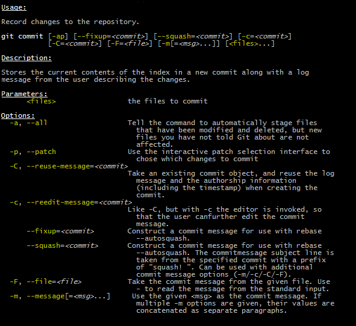

Every main method deserves picocli!

The user manual for the latest release is at http://picocli.info. For the busy and impatient: there is also a Quick Guide.
1. Introduction
Picocli is a one-file framework for creating Java command line applications with almost zero code. Supports a variety of command line syntax styles including POSIX, GNU, MS-DOS and more. Generates highly customizable usage help messages with ANSI colors and styles. Picocli-based applications can have command line TAB completion showing available options, option parameters and subcommands, for any level of nested subcommands.

A distinguishing feature of picocli is how it aims to let users run picocli-based applications without requiring picocli as an external dependency: all the source code lives in a single file, to encourage application authors to include it in source form.
How it works: annotate your class and picocli initializes it from the command line arguments, converting the input to strongly typed values in the fields of your class.
import picocli.CommandLine.Option;
import picocli.CommandLine.Parameters;
import java.io.File;
public class Example {
@Option(names = { "-v", "--verbose" }, description = "Be verbose.")
private boolean verbose = false;
@Parameters(arity = "1..*", paramLabel = "FILE", description = "File(s) to process.")
private File[] inputFiles;
...
}Then invoke CommandLine.parse or CommandLine.populateCommand with the command line parameters and an object you want to initialize.
String[] args = { "-v", "inputFile1", "inputFile2" };
Example app = CommandLine.populateCommand(new Example(), args);
assert app.verbose;
assert app.inputFiles != null && app.inputFiles.length == 2;Here is a small example application that uses the CommandLine.call convenience method
to do parsing and error handling in one line of code. The mixinStandardHelpOptions attribute is all
that is needed to give your application usage help and version help.
@Command(description = "Prints the checksum (MD5 by default) of a file to STDOUT.",
name = "checksum", mixinStandardHelpOptions = true, version = "checksum 3.0")
class CheckSum implements Callable<Void> {
@Parameters(index = "0", description = "The file whose checksum to calculate.")
private File file;
@Option(names = {"-a", "--algorithm"}, description = "MD5, SHA-1, SHA-256, ...")
private String algorithm = "MD5";
public static void main(String[] args) throws Exception {
// CheckSum implements Callable, so parsing, error handling and handling user
// requests for usage help or version help can be done with one line of code.
CommandLine.call(new CheckSum(), args);
}
@Override
public Void call() throws Exception {
// your business logic goes here...
byte[] fileContents = Files.readAllBytes(file.toPath());
byte[] digest = MessageDigest.getInstance(algorithm).digest(fileContents);
System.out.println(javax.xml.bind.DatatypeConverter.printHexBinary(digest));
return null;
}
}2. Options and Parameters
Command line arguments can be separated into options and positional parameters. Options have a name, positional parameters are usually the values that follow the options, but they may be mixed.

Picocli has separate annotations for options and positional parameters.
2.1. Options
An option must have one or more names.
Picocli lets you use any option name you want.
| You may be interested in this list of common option names. Following these conventions may make your application more intuitive to use for experienced users. |
The below example shows options with one or more names, options that take an option parameter, and a help option.
class Tar {
@Option(names = "-c", description = "create a new archive")
boolean create;
@Option(names = { "-f", "--file" }, paramLabel = "ARCHIVE", description = "the archive file")
File archive;
@Parameters(paramLabel = "FILE", description = "one or more files to archive")
File[] files;
@Option(names = { "-h", "--help" }, usageHelp = true, description = "display a help message")
private boolean helpRequested = false;
}Picocli matches the option names to set the field values.
String[] args = { "-c", "--file", "result.tar", "file1.txt", "file2.txt" };
Tar tar = new Tar();
new CommandLine(tar).parse(args);
assert !tar.helpRequested;
assert tar.create;
assert tar.archive.equals(new File("result.tar"));
assert Arrays.equals(tar.files, new File[] {new File("file1.txt"), new File("file2.txt")});2.2. Interactive (Password) Options
Picocli 3.5 introduced password support: for options and positional parameters marked as interactive, the user is prompted to enter a value on the console.
When running on Java 6 or higher, picocli will use the Console.readPassword API so that user input is not echoed to the console.
2.2.1. Example
The example below demonstrates how an interactive option can be used to specify a password.
From picocli 3.9.6, interactive options can use type char[] instead of String, to allow applications to null out the array after use so that sensitive information is no longer resident in memory.
Example usage:
class Login implements Callable<Object> {
@Option(names = {"-u", "--user"}, description = "User name")
String user;
@Option(names = {"-p", "--password"}, description = "Passphrase", interactive = true)
char[] password;
public Object call() throws Exception {
byte[] bytes = new byte[password.length];
for (int i = 0; i < bytes.length; i++) { bytes[i] = (byte) password[i]; }
MessageDigest md = MessageDigest.getInstance("SHA-256");
md.update(bytes);
System.out.printf("Hi %s, your password is hashed to %s.%n", user, base64(md.digest()));
// null out the arrays when done
Arrays.fill(bytes, (byte) 0);
Arrays.fill(password, ' ');
return null;
}
private String base64(byte[] arr) { /* ... */ }
}When this command is invoked like this:
CommandLine.call(new Login(), "-u", "user123", "-p");Then the user will be prompted to enter a value:
Enter value for --password (Passphrase):When running on Java 6 or higher, the user input is not echoed to the console.
After the user enters a password value and presses enter, the call() method is invoked, which prints something like the following:
Hi user123, your passphrase is hashed to 75K3eLr+dx6JJFuJ7LwIpEpOFmwGZZkRiB84PURz6U8=.2.2.2. Optionally Interactive
Interactive options by default cause the application to wait for input on stdin. For commands that need to be run interactively as well as in batch mode, it is useful if the option can optionally consume an argument from the command line.
The default arity for interactive options is zero, meaning that the option takes no parameters. From picocli 3.9.6, interactive options can also take a value from the command line if configured with arity = "0..1".
For example, if an application has these options:
@Option(names = "--user")
String user;
@Option(names = "--password", arity = "0..1", interactive = true)
char[] password;With the following input, the password field will be initialized to "123" without prompting the user for input:
--password 123 --user JoeHowever, if the password is not specified, the user will be prompted to enter a value. In the following example, the password option has no parameter, so the user will be prompted to type in a value on the console:
--password --user Joe|
Providing Passwords to Batch Scripts Securely
Note that specifying a password in plain text on the command line or in scripts is not secure. There are alternatives that are more secure. One idea is to add a separate different option (that could be named A command that combines either of these with an interactive The |
2.3. Short Options
Picocli supports POSIX clustered short options: one or more single-character options without option-arguments, followed by at most one option with an option-argument, can be grouped behind one '-' delimiter.
For example, given this annotated class:
class ClusteredShortOptions {
@Option(names = "-a") boolean aaa;
@Option(names = "-b") boolean bbb;
@Option(names = "-c") boolean ccc;
@Option(names = "-f") String file;
}The following command line arguments are all equivalent and parsing them will give the same result:
<command> -abcfInputFile.txt
<command> -abcf=InputFile.txt
<command> -abc -f=InputFile.txt
<command> -ab -cf=InputFile.txt
<command> -a -b -c -fInputFile.txt
<command> -a -b -c -f InputFile.txt
<command> -a -b -c -f=InputFile.txt
...2.4. Positional Parameters
Any command line arguments that are not subcommands or options (or option parameters) are interpreted as positional parameters. Positional parameters generally follow the options but from picocli v2.0, positional parameters can be mixed with options on the command line.
Use the (zero-based) index attribute to specify exactly which parameters to capture.
Omitting the index attribute means the field captures all positional parameters.
Array or collection fields can capture multiple values.
The index attribute accepts range values, so an annotation like @Parameters(index="2..4") captures the arguments at index 2, 3 and 4. Range values can be open-ended. For example, @Parameters(index="3..*") captures all arguments from index 3 and up.
For example:
class PositionalParameters {
@Parameters(hidden = true) // "hidden": don't show this parameter in usage help message
List<String> allParameters; // no "index" attribute: captures _all_ arguments (as Strings)
@Parameters(index = "0") InetAddress host;
@Parameters(index = "1") int port;
@Parameters(index = "2..*") File[] files;
}Picocli initializes fields with the values at the specified index in the arguments array.
String[] args = { "localhost", "12345", "file1.txt", "file2.txt" };
PositionalParameters params = CommandLine.populateCommand(new PositionalParameters(), args);
assert params.host.getHostName().equals("localhost");
assert params.port == 12345;
assert Arrays.equals(params.files, new File[] {new File("file1.txt"), new File("file2.txt")});
assert params.allParameters.equals(Arrays.asList("localhost", "12345", "file1.txt", "file2.txt"));See Strongly Typed Everything for which types are supported out of the box and how to add custom types.
2.5. Mixing Options and Positional Parameters
From picocli v2.0, positional parameters can be mixed with options on the command line.
For example:
class Mixed {
@Parameters
List<String> positional;
@Option(names = "-o")
List<String> options;
}Any command line argument that is not an option or subcommand is interpreted as a positional parameter.
String[] args = { "param0", "-o", "AAA", "param1", "param2", "-o", "BBB", "param3" };
Mixed mixed = new Mixed();
new CommandLine(mixed).parse(args);
assert mixed.positional.equals(Arrays.asList("param0", "param1", "param2", "param3");
assert mixed.options.equals (Arrays.asList("AAA", "BBB"));2.6. Double dash (--)
When one of the command line arguments is just two dashes without any characters attached (--),
picocli interprets all following arguments as positional parameters, even arguments that match an option name.
class DoubleDashDemo {
@Option(names = "-v") boolean verbose;
@Option(names = "-files") List<String> files;
@Parameters List<String> params;
}The -- end-of-options delimiter clarifies which of the arguments are positional parameters:
String[] args = { "-v", "--", "-files", "file1", "file2" };
DoubleDashDemo demo = new DoubleDashDemo();
new CommandLine(demo).parse(args);
assert demo.verbose;
assert demo.files == null;
assert demo.params.equals(Arrays.asList("-files", "file1", "file2"));A custom delimiter can be configured with CommandLine.setEndOfOptionsDelimiter(String).
2.7. @-files
2.7.1. Argument Files for Long Command Lines
Users sometimes run into system limitations on the length of a command line when creating a command line with lots of options or with long arguments for options.
Starting from v2.1.0, picocli supports "argument files" or "@-files". Argument files are files that themselves contain arguments to the command. When picocli encounters an argument beginning with the character `@', it expands the contents of that file into the argument list.
An argument file can include options and positional parameters in any combination. The arguments within a file can be space-separated or newline-separated. If an argument contains embedded whitespace, put the whole argument in double or single quotes. Within quoted values, backslashes need to be escaped with another backslash.
For example, it is possible to have a path with a space,
such as c:\Program Files that can be specified as either "c:\\Program Files" or,
to avoid an escape, c:\Program" "Files.
Lines starting with # are comments and are ignored.
The comment character can be configured with CommandLine.setAtFileCommentChar(Character),
and comments can be switched off by setting the comment character to null.
The file may itself contain additional @-file arguments; any such arguments will be processed recursively.
If the file does not exist, or cannot be read, then the argument will be treated literally, and not removed. Multiple @-files may be specified on the command line. The specified path may be relative (to the current directory) or absolute.
For example, suppose a file with arguments exists at /home/foo/args, with these contents:
# This line is a comment and is ignored. ABC -option=123 'X Y Z'
A command may be invoked with the @file argument, like this:
java MyCommand @/home/foo/argsThe above will be expanded to the contents of the file:
java MyCommand ABC -option=123 "X Y Z"@-file expansion can be switched off by calling CommandLine::setExpandAtFiles with false.
If turned on, you can still pass a real parameter with an initial '@' character by escaping it
with an additional '@' symbol, e.g. '@@somearg' will become '@somearg' and not be subject to expansion.
This feature is similar to the 'Command Line Argument File' processing supported by gcc, javadoc and javac. The documentation for these tools shows further examples.
2.7.2. Simplified Format
From picocli 3.8.1, a simpler argument file format is also supported where every line (except empty lines and comment lines)
is interpreted as a single argument. Arguments containing whitespace do not need to be quoted,
but it is not possible to have arguments with embedded newlines or to have empty string arguments without quotes.
From picocli 3.9, this simpler argument format is fully compatible with JCommander's @-file argument file format.
You can tell picocli to use the simplified argument file format programmatically with CommandLine.setUseSimplifiedAtFiles(true),
or by setting system property picocli.useSimplifiedAtFiles without a value or with value "true"
(case-insensitive). The system property is useful to allow end users control over the format.
3. Strongly Typed Everything
When command line options and positional parameters are mapped to the annotated fields, the text value is converted to the type of the annotated field.
3.1. Built-in Types
Out of the box, picocli can convert command line argument strings to a number of common data types.
Most of the built-in types work with Java 5, but picocli also has some default converters for Java 7 types like Path and Java 8 types like Duration, etc. These converters are loaded using reflection and are only available when running on a Java version that supports them. See the below list for details.
-
any Java primitive type or their wrapper
-
any
enum -
String,StringBuilder,CharSequence -
java.math.BigDecimal,java.math.BigInteger -
java.nio.Charset -
java.io.File -
java.net.InetAddress -
java.util.regex.Pattern -
java.util.Date(for values in"yyyy-MM-dd"format) -
java.net.URL,java.net.URI -
java.util.UUID -
java.lang.Class(from picocli 2.2, for the fully qualified class name) -
java.nio.ByteOrder(from picocli 2.2, for the Strings"BIG_ENDIAN"or"LITTLE_ENDIAN") -
java.util.Currency(from picocli 2.2, for the ISO 4217 code of the currency) -
java.net.NetworkInterface(from picocli 2.2, for the InetAddress or name of the network interface) -
java.util.TimeZoneConverter(from picocli 2.2, for the ID for a TimeZone)
Converters loaded using reflection:
-
java.nio.file.Path(from picocli 2.2, requires Java 7 or higher) -
java.timevalue objects:Duration,Instant,LocalDate,LocalDateTime,LocalTime,MonthDay,OffsetDateTime,OffsetTime,Period,Year,YearMonth,ZonedDateTime,ZoneId,ZoneOffset(from picocli 2.2, requires Java 8 or higher, invokes theparsemethod of these classes) -
java.sql.Time(for values in any of the"HH:mm","HH:mm:ss","HH:mm:ss.SSS", or"HH:mm:ss,SSS"formats) -
java.sql.Timestamp(from picocli 2.2, for values in the"yyyy-MM-dd HH:mm:ss"or"yyyy-MM-dd HH:mm:ss.fffffffff"formats) -
java.sql.Connection(from picocli 2.2, for a database url of the formjdbc:subprotocol:subname) -
java.sql.Driver(from picocli 2.2, for a database URL of the formjdbc:subprotocol:subname)
Sometimes loading converters with reflection is not desirable.
Use system property picocli.converters.excludes to specify a comma-separated list of fully qualified class names for which the converter should not be loaded.
Regular expressions are supported.
For example, invoking the program with -Dpicocli.converters.excludes=java.sql.Ti.* will not load type converters for java.sql.Time and java.sql.Timestamp.
|
3.2. Custom Type Converters
Register a custom type converter to handle data types other than the above built-in ones.
Custom converters need to implement the picocli.CommandLine.ITypeConverter interface:
public interface ITypeConverter<K> {
/**
* Converts the specified command line argument value to some domain object.
* @param value the command line argument String value
* @return the resulting domain object
* @throws Exception an exception detailing what went wrong during the conversion
*/
K convert(String value) throws Exception;
}Custom type converters can be registered with the CommandLine.registerConverter(Class<K> cls, ITypeConverter<K> converter) method. All options and positional parameters with the specified type will be converted by the specified converter.
| Java 8 lambdas make it easy to register custom converters: |
CommandLine cl = new CommandLine(app)
cl.registerConverter(Locale.class, s -> new Locale.Builder().setLanguageTag(s).build());
cl.registerConverter(Cipher.class, s -> Cipher.getInstance(s));After registering custom converters, call the parse(String…) method on the CommandLine instance where the converters are registered. (The static populateCommand method cannot be used.) For example:
class App {
@Parameters java.util.Locale locale;
@Option(names = "-a") javax.crypto.Cipher cipher;
}App app = new App();
CommandLine commandLine = new CommandLine(app)
.registerConverter(Locale.class, s -> new Locale.Builder().setLanguageTag(s).build())
.registerConverter(Cipher.class, s -> Cipher.getInstance(s));
commandLine.parse("-a", "AES/CBC/NoPadding", "en-GB");
assert app.locale.toLanguageTag().equals("en-GB");
assert app.cipher.getAlgorithm().equals("AES/CBC/NoPadding"));
Note on subcommands: the specified converter will be registered with the CommandLine object
and all subcommands (and nested sub-subcommands) that were added before the converter was registered.
Subcommands added later will not have the converter added automatically.
To ensure a custom type converter is available to all subcommands, register the type converter last, after adding subcommands.
|
3.3. Option-specific Type Converters
Picocli 2.2 added a converter attribute to the @Option and @Parameter annotations. This allows a specific option or positional parameter to use a different converter than would be used by default based on the type of the field.
For example, for a specific field you may want to use a converter that maps the constant names defined in java.sql.Types to the int value of these constants, but any other int fields should not be affected by this and should continue to use the standard int converter that parses numeric values.
Example usage:
class App {
@Option(names = "--sqlType", converter = SqlTypeConverter.class)
int sqlType;
}Example implementation:
class SqlTypeConverter implements ITypeConverter<Integer> {
public Integer convert(String value) throws Exception {
switch (value) {
case "ARRAY" : return Types.ARRAY;
case "BIGINT" : return Types.BIGINT;
case "BINARY" : return Types.BINARY;
case "BIT" : return Types.BIT;
case "BLOB" : return Types.BLOB;
...
}
}
}This may also be useful for applications that need a custom type converter but want to use the static convenience methods (populateCommand, run, call, invoke). The converter annotation does not require a CommandLine instance so it can be used with the static convenience methods.
Type converters declared with the converter attribute need to have a public no-argument constructor to be instantiated, unless a Custom Factory is installed to instantiate classes.
3.4. Arrays, Collections, Maps
Starting from picocli v2.0, the type attribute is no longer necessary for Collection and Map fields:
picocli will infer the collection element type from the generic type.
(The type attribute still works as before, it is just optional in most cases.)
|
3.4.1. Arrays and Collections
Multiple parameters can be captured together in a single array or Collection field.
The array or collection elements can be any type for which a converter is registered.
For example:
import java.util.regex.Pattern;
import java.io.File;
class Convert {
@Option(names = "-patterns", description = "the regex patterns to use");
Pattern[] patterns;
@Parameters(/* type = File.class, */ description = "the files to convert")
List<File> files; // picocli infers type from the generic type
}String[] args = { "-patterns", "a*b", "-patterns", "[a-e][i-u]", "file1.txt", "file2.txt" };
Convert convert = CommandLine.populateCommand(new Convert(), args);
// convert.patterns now has two Pattern objects
// convert.files now has two File objects| If a collection is returned from a type converter, the contents of the collection are added to the field or method parameter, not the collection itself. |
If the field or method parameter is null, picocli will instantiate it when the option or positional parameter is successfully matched.
If the Collection type is not a concrete class, picocli will make a best effort to instantiate it based on the field type:
List → ArrayList, OrderedSet → TreeSet, Set → LinkedHashSet, Queue → LinkedList, otherwise, ArrayList.
3.4.2. Maps
Picocli v1.0 introduced support for Map fields similar to Java’s system properties -Dkey=value or Gradle’s project properties -Pmyprop=myvalue.
Map fields may have any type for their key and value
as long as a converter is registered for both the key and the value type.
Key and value types are inferred from the map’s generic type parameters.
For example:
import java.net.InetAddress;
import java.net.Proxy.Type;
import java.util.concurrent.TimeUnit;
class MapDemo {
@Option(names = {"-p", "--proxyHost"});
Map<Proxy.Type, InetAddress> proxies;
@Option(names = {"-u", "--timeUnit"});
Map<TimeUnit, Long> timeout;
}Map options may be specified multiple times with different key-value pairs. (See Multiple Values.)
<command> -p HTTP=123.123.123.123 --proxyHost SOCKS=212.212.212.212
<command> -uDAYS=3 -u HOURS=23 -u=MINUTES=59 --timeUnit=SECONDS=13If the field is null, picocli will instantiate it when the option or positional parameter is matched.
If the type is not a concrete class, picocli will instantiate a LinkedHashMap to preserve the input ordering.
On the command line, the key and the value must be separated by a = character.
|
3.5. Abstract Field Types
The field’s type can be an interface or an abstract class.
The type attribute can be used to control for each field what concrete class the string value should be converted to.
For example:
class App {
@Option(names = "--big", type = BigDecimal.class) // concrete Number subclass
Number[] big; // array type with abstract component class
@Option(names = "--small", type = Short.class) // other Number subclass
Number[] small;
@Parameters(type = StringBuilder.class) // StringBuilder implements CharSequence
CharSequence address; // interface type
}3.5.1. Maps and Collections with Abstract Elements
For raw maps and collections, or when using generics with unbounded wildcards like Map<?, ?>, or when the type parameters are themselves abstract classes like List<CharSequence> or Map<? extends Number, ? super Number>, there is not enough information to convert to a stronger type. By default, the raw String values are added as is to such collections.
The type attribute can be specified to convert to a stronger type than String. For example:
class TypeDemo {
@Option(names = "-x"); // not enough information to convert
Map<?, ?> weaklyTyped; // String keys and values are added as is
@Option(names = "-y", type = {Short.class, BigDecimal.class});
Map<? extends Number, ? super Number> stronglyTyped;
@Option(names = "-s", type = CharBuffer.class);
List<CharSequence> text;
}3.6. Enum Types
It is encouraged to use enum types for options or positional parameters with a limited set of valid values.
Not only will picocli validate the input, it allows you to show all values in the usage help message with @Option(description = "Valid values: ${COMPLETION-CANDIDATES}"). It also allows command line completion to suggest completion candidates for the values of this option.
Enum value matching is case-sensitive by default, but from 3.4 this can be controlled with CommandLine::setCaseInsensitiveEnumValuesAllowed and CommandSpec::caseInsensitiveEnumValuesAllowed.
4. Default Values
It is possible to define a default value for an option or positional parameter, that is assigned when the user did not specify this option or positional parameter on the command line.
4.1. Field Values
For annotated fields, it is simplest to declare the field with a value:
@Option(names = "-c", description = "The count (default: ${DEFAULT-VALUE})")
int count = 123; // default value is 1234.2. defaultValue Annotation
For @Option and @Parameters-annotated methods and @Command-annotated methods, use the defaultValue annotation attribute. For example, for an annotated interface:
interface Spec {
@Option(names = "-c", defaultValue = "123", description = "... ${DEFAULT-VALUE} ...")
int count();
}Or similarly for an annotated concrete class:
class Impl {
int count;
@Option(names = "-c", defaultValue = "123", description = "... ${DEFAULT-VALUE} ...")
void setCount(int count) {
this.count = count;
}
}And finally for a command method:
class CommandMethod {
@Command(description = "Do something.")
void doit(@Option(names = "-c", defaultValue = "123") int count) {
// ...
}
}Note that you can use the ${DEFAULT-VALUE} variable in the description of the option or positional parameter and picocli will show the actual default value.
4.3. Default Provider
Finally, you can specify a default provider in the @Command annotation:
@Command(defaultValueProvider = MyDefaultProvider.class)
class MyCommand // ...The default provider allows you to get default values from a configuration file or some other central place.
Default providers need to implement the picocli.CommandLine.IDefaultValueProvider interface:
public interface IDefaultValueProvider {
/**
* Returns the default value for an option or positional parameter or {@code null}.
* The returned value is converted to the type of the option/positional parameter
* via the same type converter used when populating this option/positional
* parameter from a command line argument.
*
* @param argSpec the option or positional parameter, never {@code null}
* @return the default value for the option or positional parameter, or {@code null} if
* this provider has no default value for the specified option or positional parameter
* @throws Exception when there was a problem obtaining the default value
*/
String defaultValue(ArgSpec argSpec) throws Exception;
}5. Multiple Values
Multi-valued options and positional parameters are annotated fields that can capture multiple values from the command line.
5.1. Multiple Occurrences
5.1.1. Repeated Options
The simplest way to create a multi-valued option is to declare an annotated field whose type is an array, collection or a map.
@Option(names = "-option")
int[] values;Users may specify the same option multiple times. For example:
<command> -option 111 -option 222 -option 333
Each value is appended to the array or collection.
5.1.2. Multiple Positional Parameters
Similarly for multi-valued positional parameters:
@Parameters
List<TimeUnit> units;Users may specify multiple positional parameters. For example:
<command> SECONDS HOURS DAYS
Again, each value is appended to the array or collection.
5.1.3. Repeated Boolean Options
Boolean options with multiple values are supported from picocli v2.1.0.
@Option(names = "-v", description = { "Specify multiple -v options to increase verbosity.",
"For example, `-v -v -v` or `-vvv`"})
boolean[] verbosity;Users may specify multiple boolean flag options without parameters. For example:
<command> -v -v -v -vvv
The above example results in six true values being added to the verbosity array.
5.2. Split Regex
Options and parameters may also specify a split regular expression used to split each option parameter into smaller substrings.
Each of these substrings is converted to the type of the collection or array. See Arrays and Collections.
@Option(names = "-option", split = ",")
int[] values;A single command line argument like the following will be split up and three int values are added to the array:
-option 111,222,333
Similarly for Maps:
@Option(names = "-fix", split = "\\|")
Map<Integer, String> message;With the above option, command line arguments like the following are interpreted as a set of key-value pairs instead of a single string:
-fix 8=FIX.4.4|9=69|35=A|49=MBT|56=TargetCompID|34=9|52=20130625-04:05:32.682|98=0|108=30|10=052
See Quoted Values for details on handling more complex cases.
5.3. Arity
Sometimes you want to define an option that requires more than one option parameter for each option occurrence on the command line.
The arity attribute lets you control exactly how many parameters to consume for each option occurrence.
The arity attribute can specify an exact number of required parameters, or a range with a minimum and a maximum number of parameters.
The maximum can be an exact upper bound, or it can be "*" to denote any number of parameters. For example:
class ArityDemo {
@Parameters(arity = "1..3", descriptions = "one to three Files")
File[] files;
@Option(names = "-f", arity = "2", description = "exactly two floating point numbers")
double[] doubles;
@Option(names = "-s", arity = "1..*", description = "at least one string")
String[] strings;
}A MissingParameterException is thrown when fewer than the miminum number of parameters is specified on the command line.
Once the minimum number of parameters is consumed, picocli will check each subsequent command line argument to see whether it is an additional parameter, or a new option. For example:
ArityDemo -s A B C -f 1.0 2.0 /file1 /file2
Option -s has arity "1..*" but instead of consuming all parameters,
the -f argument is recognized as a separate option.
5.4. Default Arity
If no arity is specified, the number of parameters depends on the field’s type.
5.4.1. Option Arity
| @Option Field Type | Default Arity | Notes |
|---|---|---|
boolean |
0 |
Boolean options by default don’t require an option parameter. The field is toggled to its logical negative when the option name is recognized. (This can be switched off.) |
Single-valued type (e.g., |
1 |
The option name must be followed by a value. |
Multi-valued type (arrays, collections or maps) |
1 |
The option name must be followed by a value. |
Prior to picocli v2.0, multi-valued options used to greedily consume as many arguments as possible until
encountering another option or subcommand.
If your application relies on the previous behaviour, you need to explicitly specify an option arity of 0..* when migrating to picocli v2.0.
|
5.4.2. Positional Parameter Arity
| @Parameters Field Type | Default Arity | Notes |
|---|---|---|
boolean |
1 |
Positional parameters of type |
Single-valued type (e.g., |
1 |
One parameter required for each position. |
Multi-valued type (arrays, collections or maps) |
0..1 |
For multi-valued positional parameters (arrays, collections or maps), values are optional, not required. |
@Parameters fields are applied to a command line argument if their index matches the argument’s position.
The default index is *, meaning all positions.
A @Parameters field with index = "*" is applied multiple times: once for each positional parameter on the command line.
When a @Parameters field is applied (because its index matches the index of the positional parameter), the field may consume zero, one or more arguments, depending on its arity.
5.5. Optional Values
If an option is defined with arity = "0..1", it may or not have a parameter value.
If such an option is specified without a value on the command line, it is assigned an empty String (starting from picocli 2.3).
If the option is not specified, it keeps its default value. For example:
class OptionalValueDemo implements Runnable {
@Option(names = "-x", arity = "0..1", description = "optional parameter")
String x;
public void run() { System.out.printf("x = '%s'%n", x); }
public static void main(String... args) {
CommandLine.run(new OptionalValueDemo(), args);
}
}Gives the following results:
java OptionalValueDemo -x value
x = 'value'
java OptionalValueDemo -x
x = ''
java OptionalValueDemo
x = 'null'From picocli 3.0, options with non-String types can specify a type converter to convert the empty String to a strongly typed value when the option is specified without a value.
6. Required Arguments
6.1. Required Options
Options can be marked required to make it mandatory for the user to specify them on the command line. When a required option is not specified, a MissingParameterException is thrown from the parse method. For example:
class MandatoryOption {
@Option(names = "-n", required = true, description = "mandatory number")
int number;
@Parameters
File[] files;
}The following command line arguments would result in an exception complaining that number is missing:
// invalid: missing option -n <command> file1 file2 file3
The following command line arguments would be accepted:
// valid: required option -n has a value <command> -n 123 file1 file2 file3
6.2. Required Parameters
Use the arity attribute to make @Parameters mandatory:
class BothOptionAndParametersMandatory {
@Parameters(arity = "1..*", descriptions = "at least one File")
File[] files;
@Option(names = "-n", required = true, description = "mandatory number")
int number;
}The following command line arguments would result in an exception complaining that files are missing:
// invalid: missing file parameters <command> -n 123
The following command line arguments would be accepted:
// valid: both required fields have a value <command> -n 123 file1
7. Parser Configuration
7.1. Overwriting Single Options
When a single-value option is specified multiple times on the command line, the default parser behaviour is
to throw an OverwrittenOptionException. For example:
@Option(name = "-p") int port;The following input results in an OverwrittenOptionException:
<command> -p 80 -p 8080
Applications can change this by calling CommandLine.setOverwrittenOptionsAllowed(true) before parsing the input.
When overwritten options are allowed, the last specified value takes effect (the above input will set the port field to 8080)
and a WARN level message is printed to the console. (See Tracing for how to switch off the warnings.)
7.2. Stop At Positional
By default, positional parameters can be mixed with options on the command line, but this is not always desirable.
From picocli 2.3, applications can call CommandLine.setStopAtPositional(true)
to force the parser to treat all values following the first positional parameter as positional parameters.
When this flag is set, the first positional parameter effectively serves as an "end of options" marker.
7.3. Unmatched Input
By default, an UnmatchedArgumentException is thrown when a command line argument cannot be assigned to
an option or positional parameter. For example:
class OnlyThree {
@Parameters(arity = "3") String[] values;
}The command has only one annotated field, values, and it expects exactly three arguments,
so the following input results in an UnmatchedArgumentException:
java OnlyThree 1 2 3 4 5
Applications can change this by calling CommandLine.setUnmatchedArgumentsAllowed(true) before parsing the input.
When unmatched arguments are allowed, the above input will be accepted and a WARN level message is printed to the console.
(See Tracing for how to switch off the warnings.)
The unmatched argument values can be obtained with the CommandLine.getUnmatchedArguments() method.
7.4. @Unmatched annotation
From picocli 3.0, fields annotated with @Unmatched will be populated with the unmatched arguments.
The field must be of type String[] or List<String>.
If picocli finds a field annotated with @Unmatched, it automatically sets unmatchedArgumentsAllowed to true
so no UnmatchedArgumentException is thrown when a command line argument cannot be assigned to an option or positional parameter.
If no unmatched arguments are found, the value of the field annotated with @Unmatched is unchanged.
7.5. Unknown Options
A special case of unmatched input are arguments that resemble options but don’t match any of the defined options. For example:
@Option(names = "-a") String alpha;
@Option(names = "-b") String beta;
@Parameters String[] remainder;The above defines options -a and -b, but what should the parser do with input like this?
<command> -x -a AAA
The -x argument "looks like" an option but there is no -x option defined…
One possibility is to silently accept such values as positional parameters but this is often not desirable. From version 1.0, picocli determines if the unmatched argument "resembles an option" by comparing its leading characters to the prefix characters of the known options.
When the unmatched value is similar to the known options, picocli throws an UnmatchedArgumentException
rather than treating it as a positional parameter.
As usual, CommandLine.setUnmatchedArgumentsAllowed(true) will accept unmatched input and
display a WARN-level message on the console.
Arguments that are not considered similar to the known options are interpreted as positional parameters:
<command> x -a AAA
The above input is treated by the parser as one positional parameter (x) followed by the -a option and its value.
Picocli 3.0 introduced a CommandLine.setUnmatchedOptionsArePositionalParams(boolean) method that can be used to
force the parser to treat arguments resembling an option as positional parameters. For example:
<command> -x -a AAA
When unmatchedOptionsArePositionalParams is set to true, the unknown option -x is treated as a positional parameter.
The next argument -a is recognized and processed as a known option like you would expect.
7.6. Stop At Unmatched
From picocli 2.3, applications can call CommandLine.setStopAtUnmatched(true) to force the parser to stop interpreting
options and positional parameters as soon as it encounters an unmatched argument.
When this flag is set, the first unmatched argument and all subsequent command line arguments are added to the
unmatched arguments list returned by CommandLine.getUnmatchedArguments().
7.7. Toggle Boolean Flags
By default, boolean flag options without a parameter are "toggled" when the option is matched on the command line:
if the previous value was true it is set to false, and when the value was false it is set to true.
From picocli 3.0, applications can call CommandLine.setToggleBooleanFlags(false) to switch this behaviour off.
If toggling is off, flags are simply set to true when the option is matched on the command line.
7.8. POSIX Clustered Short Options
By default, the picocli parser allows POSIX clustered short options, so short options like -x -v -f SomeFile can be clustered together like -xvfSomeFile.
From picocli 3.0, applications can call CommandLine.setPosixClusteredShortOptionsAllowed(false) to enforce that options must be separated with whitespace on the command line.
(This also means that option parameters must be separated from the option name by whitespace or the = separator character, so -D key=value and -D=key=value will be recognized but -Dkey=value will not.)
7.9. Lenient Mode (Incubating)
From picocli 3.2, the parser can be configured to continue parsing invalid input to the end.
When collectErrors is set to true, and a problem occurs during parsing, an Exception is added to the ParseResult.errors() list and parsing continues. The default behaviour (when collectErrors is false) is to abort parsing by throwing the Exception.
This is useful when generating completion candidates on partial input, and is also useful when using picocli in languages like Clojure where idiomatic error handling does not involve throwing and catching exceptions.
When using this feature, applications are responsible for actively verifying that no errors occurred before executing the business logic. Use with care!
7.10. Quoted Values
From picocli 3.7, quotes around command line parameters are preserved by default (previously they were removed). This can be configured with CommandLine::setTrimQuotes.
Also, when splitting parameters, quoted strings are no longer split. This can be configured with CommandLine::setSplitQuotedStrings.
Example:
@Option(names = "-x", split = ",")
String[] parts;Given input like below:
<command> -x "-Dvalues=a,b,c","-Dother=1,2"This results in the parts array having the following values:
"-Dvalues=a,b,c"
"-Dother=1,2"Given input like below:
<command> -x a,b,"c,d,e",f,"xxx,yyy"This results in the parts array having the following values:
a
b
"c,d,e"
f
"xxx,yyy"When the splitQuotedStrings parser attribute is set to true the split regex is applied to the parameter value regardless of quotes.
This can be useful when using a regular expression that is designed to handle quotes.
8. Help
8.1. Help Options
Applications can define help options by setting attribute versionHelp = true, usageHelp = true or help = true.
If one of the arguments specified on the command line is a "help" option, picocli will not throw a MissingParameterException when required options are missing.
For example:
@Option(names = {"-V", "--version"}, versionHelp = true, description = "display version info")
boolean versionInfoRequested;
@Option(names = {"-h", "--help"}, usageHelp = true, description = "display this help message")
boolean usageHelpRequested;Use these attributes for options that request the usage help message or version information to be shown on the console.
App app = CommandLine.populateCommand(new App(), args);
if (app.usageHelpRequested) {
CommandLine.usage(new App(), System.out);
return;
}The CommandLine class offers two methods that allow external components to detect whether
usage help or version information was requested (without inspecting the annotated domain object):
-
CommandLine.isUsageHelpRequested()returnstrueif the parser matched an option annotated withusageHelp=true -
CommandLine.isVersionHelpRequested()returnstrueif the parser matched an option annotated withversionHelp=true
CommandLine commandLine = new CommandLine(new App());
commandLine.parse(args);
if (commandLine.isUsageHelpRequested()) {
commandLine.usage(System.out);
return;
} else if (commandLine.isVersionHelpRequested()) {
commandLine.printVersionHelp(System.out);
return;
}
// ... run App's business logicSee also Printing Help Automatically.
8.2. Mixin Standard Help Options
Picocli 3.0 introduced the mixinStandardHelpOptions command attribute. When this attribute is set to true, picocli adds a mixin to the
command that adds usageHelp and versionHelp options to the command. For example:
@Command(mixinStandardHelpOptions = true, version = "auto help demo - picocli 3.0")
class AutoHelpDemo implements Runnable {
@Option(names = "--option", description = "Some option.")
String option;
@Override public void run() { ... }
}Commands with mixinStandardHelpOptions do not need to explicitly declare fields annotated with @Option(usageHelp = true) and @Option(versionHelp = true) any more.
The usage help message for the above example looks like this:
Usage: <main class> [-hV] [--option=<option>]
--option=<option> Some option.
-h, --help Show this help message and exit.
-V, --version Print version information and exit.
8.3. Built-in Help Subcommand
From 3.0, picocli provides a help subcommand (picocli.CommandLine.HelpCommand) that can be installed as a subcommand
on any application command. It prints usage help for the parent command or sibling subcommands. For example:
import picocli.CommandLine.HelpCommand;
@Command(name = "myapp", subcommands = {HelpCommand.class, Subcommand.class})
class MyCommand implements Runnable {
// ...
}For example, the following command prints usage help for a subcommand:
myapp help subcommandTo print usage help for the main command:
myapp help8.4. Custom Help Subcommands
Custom help subcommands should mark themselves as a help command to tell picocli not to throw a MissingParameterException when required options are missing.
@Command(helpCommand = true)Picocli 3.0 introduced a new interface picocli.CommandLine.IHelpCommandInitializable that provides custom help
commands with access to the parent command and sibling commands, whether to use Ansi colors or not, and the streams to print the usage help message to.
public interface IHelpCommandInitializable {
/**
* Initializes this object with the information needed to implement a help command that
* provides usage help for other commands.
*
* @param helpCommandLine provides access to this command's parent and sibling commands
* @param ansi whether to use Ansi colors or not
* @param out the stream to print the usage help message to
* @param err the error stream to print any error messages to
*/
void init(CommandLine helpCommandLine, Help.Ansi ansi, PrintStream out, PrintStream err);
}8.5. Printing Help Automatically
From picocli v2.0, the convenience methods will automatically print usage help and version information
when a help option was specified on the command line (options annotated with the versionHelp or usageHelp attribute - but not the help attribute).
The same holds for the mixinStandardHelpOptions attribute, the built-in HelpCommand and any custom help subcommands marked as a help command.
The following convenience methods automatically print help:
-
CommandLine::call -
CommandLine::run -
CommandLine::invoke -
CommandLine::parseWithHandler(with the built-inRun…handlers) -
CommandLine::parseWithHandlers(with the built-inRun…handlers)
The following methods do not automatically print help:
-
CommandLine::parse -
CommandLine::parseArgs -
CommandLine::populateCommand
When using the last three methods, applications need to query the parse result to detect whether usage help or version help
was requested, and invoke CommandLine::usage or CommandLine::printVersionHelp to actually print the requested help message.
9. Version Help
9.1. Static Version Information
Since v0.9.8, applications can specify version information in the version attribute of the @Command annotation.
@Command(version = "1.0")
class VersionedCommand {
@Option(names = { "-V", "--version" }, versionHelp = true,
description = "print version information and exit")
boolean versionRequested;
...The CommandLine.printVersionHelp(PrintStream) method extracts the version information from this
annotation and prints it to the specified PrintStream.
CommandLine commandLine = new CommandLine(new VersionedCommand());
commandLine.parse(args);
if (commandLine.isVersionHelpRequested()) {
commandLine.printVersionHelp(System.out);
return;
}The version may specify multiple Strings. Each will be printed on a separate line.
@Command(version = { "Versioned Command 1.0", "Build 12345", "(c) 2017" })
class VersionedCommand { ... }The CommandLine.printVersionHelp(PrintStream) method will print the above as:
Versioned Command 1.0 Build 12345 (c) 2017
The version strings may contain markup to show ANSI styles and colors. For example:
@Command(version = {
"@|yellow Versioned Command 1.0|@",
"@|blue Build 12345|@",
"@|red,bg(white) (c) 2017|@" })
class VersionedCommand { ... }The markup will be rendered as ANSI escape codes on supported systems.
From picocli v1.0, the version may contain format specifiers:
@Command(version = {
"Versioned Command 1.0",
"Build %1$s",
"(c) 2017, licensed to %2$s" })
class VersionedCommand { ... }Format argument values can be passed to the printVersionHelp method:
String[] args = {"1234", System.getProperty("user.name")};
new CommandLine(new VersionedCommand())
.printVersionHelp(System.out, Help.Ansi.AUTO, args);9.2. Dynamic Version Information
From picocli 2.2, the @Command annotation supports a versionProvider attribute.
Applications may specify a IVersionProvider implementation in this attribute, and picocli will instantiate this class
and invoke it to collect version information.
@Command(versionProvider = com.my.custom.ManifestVersionProvider.class)
class App { ... }This is useful when the version of an application should be detected dynamically at runtime. For example, an implementation may return version information obtained from the JAR manifest, a properties file or some other source.
Custom version providers need to implement the picocli.CommandLine.IVersionProvider interface:
public interface IVersionProvider {
/**
* Returns version information for a command.
* @return version information (each string in the array is displayed on a separate line)
* @throws Exception an exception detailing what went wrong when obtaining version information
*/
String[] getVersion() throws Exception;
}Version providers declared with the versionProvider attribute need to have a public no-argument constructor to be instantiated, unless a Custom Factory is installed to instantiate classes.
10. Usage Help
10.1. Compact Example
A default picocli usage help message looks like this:
Usage: cat [-AbeEnstTuv] [--help] [--version] [FILE...]
Concatenate FILE(s), or standard input, to standard output.
FILE Files whose contents to display
-A, --show-all equivalent to -vET
-b, --number-nonblank number nonempty output lines, overrides -n
-e equivalent to -vET
-E, --show-ends display $ at end of each line
-n, --number number all output lines
-s, --squeeze-blank suppress repeated empty output lines
-t equivalent to -vT
-T, --show-tabs display TAB characters as ^I
-u (ignored)
-v, --show-nonprinting use ^ and M- notation, except for LDF and TAB
--help display this help and exit
--version output version information and exit
Copyright(c) 2017
The usage help message is generated from annotation attributes, like below:
@Command(name = "cat", footer = "Copyright(c) 2017",
description = "Concatenate FILE(s), or standard input, to standard output.")
class Cat {
@Parameters(paramLabel = "FILE", description = "Files whose contents to display")
List<File> files;
@Option(names = "--help", usageHelp = true, description = "display this help and exit")
boolean help;
@Option(names = "-t", description = "equivalent to -vT") boolean t;
@Option(names = "-e", description = "equivalent to -vET") boolean e;
@Option(names = {"-A", "--show-all"}, description = "equivalent to -vET") boolean all;
// ...
}10.2. Command Name
In the above example, the program name is taken from the name attribute of the Command annotation:
@Command(name = "cat")Without a name attribute, picocli will show a generic <main class> in the synopsis:
Usage: <main class> [-AbeEnstTuv] [--help] [--version] [FILE...]
10.3. Parameter Labels
Non-boolean options require a value. The usage help should explain this, and picocli shows the option parameter
in the synopsis and in the option list. By default, the field name is shown in < and > fish brackets.
Use the paramLabel attribute to display a different name. For example:
Usage: <main class> [-f=FILE] [-n=<number>] NUM <host>
NUM number param
host the host parameter
-f= FILE a file
-n= <number> a number option
Some annotated fields in the below example class have a paramLabel attribute and others don’t:
@Command()
class ParamLabels {
@Option(names = "-f", description = "a file", paramLabel = "FILE") File f;
@Option(names = "-n", description = "a number option") int number;
@Parameters(index = "0", description = "number param", paramLabel = "NUM") int n;
@Parameters(index = "1", description = "the host parameter") InetAddress host;
}
For demonstration purposes the above example mixes the all-uppercase (e.g., NUM) style label and the fish bracket (e.g., <number>) style labels. For real applications, mixing these label styles should be avoided. An application should consistently use only one style.
|
10.4. Unsorted Option List
By default the options list displays options in alphabetical order. Use the sortOptions = false attribute to display options in the order they are declared in your class.
@Command(sortOptions = false)10.5. Reordering Options
When mixing @Option methods and @Option fields, options do not reliably appear in declaration order.
The @Option(order = <int>) attribute can be used to explicitly control the position in the usage help message at which the option should be shown.
Options with a lower number are shown before options with a higher number.
10.6. Abbreviated Synopsis
If a command is very complex and has many options, it is sometimes desirable to suppress details from the synopsis with the abbreviateSynopsis attribute. For example:
Usage: <main class> [OPTIONS] [<files>...]
Note that the positional parameters are not abbreviated.
@Command(abbreviateSynopsis = true)
class App {
@Parameters File[] files;
@Option(names = {"--count", "-c"}) int count;
....
}10.7. Custom Synopsis
For even more control of the synopsis, use the customSynopsis attribute to specify one or more synopsis lines. For example:
Usage: ln [OPTION]... [-T] TARGET LINK_NAME (1st form) or: ln [OPTION]... TARGET (2nd form) or: ln [OPTION]... TARGET... DIRECTORY (3rd form) or: ln [OPTION]... -t DIRECTORY TARGET... (4th form)
To produce a synopsis like the above, specify the literal text in the customSynopsis attribute:
@Command(synopsisHeading = "", customSynopsis = {
"Usage: ln [OPTION]... [-T] TARGET LINK_NAME (1st form)",
" or: ln [OPTION]... TARGET (2nd form)",
" or: ln [OPTION]... TARGET... DIRECTORY (3rd form)",
" or: ln [OPTION]... -t DIRECTORY TARGET... (4th form)",
})
class Ln { ... }10.8. Header and Footer
The header will be shown at the top of the usage help message (before the synopsis). The first header line is also the line shown in the subcommand list if your command has subcommands (see Usage Help for Subcommands).
Use the footer attribute to specify one or more lines to show below the generated usage help message.
Each element of the attribute String array is displayed on a separate line.
10.9. Format Specifiers
All usage help message elements can have embedded line separator (%n) format specifiers.
These are converted to the platform-specific line separator when the usage help message is printed.
Version help may have format specifiers that format additional arguments passed to the printVersionHelp method.
See the java.util.Formatter javadoc for details.
Note that to show percent '%' characters in the usage help message, they need to be escaped with another %. For example: @Parameters(description = "%%-age of the total") is rendered as %-age of the total.
|
An alternative way to control the layout of the usage help message is that some sections (header, footer, and description) can be specified as an array of Strings,
where each element of the array is displayed on a separate line in the usage help message.
10.10. Section Headings
Section headers can be used to make usage message layout appear more spacious. The example below demonstrates the use of embedded line separator (%n) format specifiers:
@Command(name = "commit",
sortOptions = false,
headerHeading = "Usage:%n%n",
synopsisHeading = "%n",
descriptionHeading = "%nDescription:%n%n",
parameterListHeading = "%nParameters:%n",
optionListHeading = "%nOptions:%n",
header = "Record changes to the repository.",
description = "Stores the current contents of the index in a new commit " +
"along with a log message from the user describing the changes.")
class GitCommit { ... }The usage help message generated from this class is shown below in Expanded Example.
10.11. Expanded Example
The below example demonstrates what a customized usage message can look like. Note how section headings with line separators can create a more spacious usage message, and also that options are listed in declaration order (instead of in alphabetic order).
Usage:
Record changes to the repository.
git commit [-ap] [--fixup=<commit>] [--squash=<commit>] [-c=<commit>]
[-C=<commit>] [-F=<file>] [-m[=<msg>...]] [<files>...]
Description:
Stores the current contents of the index in a new commit along with a log
message from the user describing the changes.
Parameters:
<files> the files to commit
Options:
-a, --all Tell the command to automatically stage files
that have been modified and deleted, but new
files you have not told Git about are not
affected.
-p, --patch Use the interactive patch selection interface to
chose which changes to commit
-C, --reuse-message=<commit>
Take an existing commit object, and reuse the log
message and the authorship information
(including the timestamp) when creating the
commit.
-c, --reedit-message=<commit>
Like -C, but with -c the editor is invoked, so
that the user canfurther edit the commit
message.
--fixup=<commit> Construct a commit message for use with rebase
--autosquash.
--squash=<commit> Construct a commit message for use with rebase
--autosquash. The commitmessage subject line is
taken from the specified commit with a prefix
of "squash! ". Can be used with additional
commit message options (-m/-c/-C/-F).
-F, --file=<file> Take the commit message from the given file. Use
- to read the message from the standard input.
-m, --message[=<msg>...] Use the given <msg> as the commit message. If
multiple -m options are given, their values are
concatenated as separate paragraphs.
The annotated class that this usage help message is generated from is shown in Section Headings.
10.12. Option-Parameter Separators
The separator displayed between options and option parameters (= by default)
in the synopsis and the option list can be configured with the separator attribute.
@Command(separator = " ")
the @Command(separator = " ") annotation also affects how picocli parses the command line. See also Custom Separators.
|
10.13. Hidden Options and Parameters
Options and Parameters with the hidden attribute set to true will not be shown in the usage help message.
This is useful for example when a parameter at some index is captured into multiple fields:
by default each of these fields would be shown in the usage message, which would be confusing for users.
For example, the all field below is annotated as hidden = true:
@Command()
class App {
@Parameters(index = "0", description = "destination host") InetAddress host;
@Parameters(index = "1", description = "destination port") int port;
@Parameters(index = "2..*", description = "files to transfer") String[] files;
@Parameters(hidden = true) String[] all;
}The above will generate the following usage help message, where the all field is not shown:
Usage: <main class> <host> <port> [<files>...]
host destination host
port destination port
files files to transfer
10.14. Show Default Values
10.14.1. ${DEFAULT-VALUE} Variable
From picocli 3.2, it is possible to embed the default values in the description for an option or positional parameter by
specifying the variable ${DEFAULT-VALUE} in the description text.
Picocli uses reflection to get the default values from the annotated fields.
The variable is replaced with the default value regardless of the @Command(showDefaultValues) attribute
and regardless of the @Option(showDefaultValues) or @Parameters(showDefaultValues) attribute.
class DefaultValues {
@Option(names = {"-f", "--file"},
description = "the file to use (default: ${DEFAULT-VALUE})")
File file = new File("config.xml");
}
CommandLine.usage(new DefaultValues(), System.out);This produces the following usage help:
Usage: <main class> -f=<file> -f, --file=<file> the file to use (default: config.xml)
10.14.2. ${COMPLETION-CANDIDATES} Variable
Similarly, it is possible to embed the completion candidates in the description for an option or positional parameter by
specifying the variable ${COMPLETION-CANDIDATES} in the description text.
This works for java enum classes and for options or positional parameters of non-enum types for which completion candidates are specified.
enum Lang { java, groovy, kotlin, javascript, frege, clojure }
static class MyAbcCandidates extends ArrayList<String> {
MyAbcCandidates() { super(Arrays.asList("A", "B", "C")); }
}
class ValidValuesDemo {
@Option(names = "-l", description = "Enum values: ${COMPLETION-CANDIDATES}")
Lang lang = null;
@Option(names = "-o", completionCandidates = MyAbcCandidates.class,
description = "Candidates: ${COMPLETION-CANDIDATES}")
String option;
}
CommandLine.usage(new ValidValuesDemo(), System.out);This produces the following usage help:
Usage: <main class> -l=<lang> -o=<option> -l=<lang> Enum values: java, groovy, kotlin, javascript, frege, clojure -o=<option> Candidates: A, B, C
10.14.3. Legacy Configuration for Displaying Default Values
Prior to picocli 3.2, you need to use the @Command(showDefaultValues = true) attribute to append the default value of
all non-null options and positional parameters to the description column.
Additionally, picocli 3.0 introduced a showDefaultValue attribute to the @Option and @Parameters annotation.
This allows you to specify for each individual option and positional parameter whether its default value should be shown in the usage help.
This attribute accepts three values:
-
ALWAYS- always display the default value of this option or positional parameter, evennullvalues, regardless what value ofshowDefaultValueswas specified on the command -
NEVER- don’t show the default value for this option or positional parameter, regardless what value ofshowDefaultValueswas specified on the command -
ON_DEMAND- (this is the default) only show the default value for this option or positional parameter ifshowDefaultValueswas specified on the command
These legacy mechanisms still work but for maximum flexibility use the variables explained above.
10.15. Required-Option Marker
Required options can be marked in the option list by the character specified with the requiredOptionMarker attribute. By default options are not marked because the synopsis shows users which options are required and which are optional. This feature may be useful in combination with abbreviatedSynopsis. For example:
@Command(requiredOptionMarker = '*', abbreviateSynopsis = true)
class Example {
@Option(names = {"-a", "--alpha"}, description = "optional alpha") String alpha;
@Option(names = {"-b", "--beta"}, required = true, description = "mandatory beta") String beta;
}Produces the following usage help message:
Usage: <main class> [OPTIONS] -a, --alpha=<alpha> optional alpha * -b, --beta=<beta> mandatory beta
10.16. Usage Width
The default width of the usage help message is 80 characters.
System property picocli.usage.width can be used to specify a custom width.
The minimum width that can be configured is 55 characters.
Picocli 3.0 also introduced programmatic API for this via the CommandLine::setUsageHelpWidth and UsageMessageSpec::width methods.
11. ANSI Colors and Styles
11.1. Colorized Example
Below shows the same usage help message as shown in Expanded Example, with ANSI escape codes enabled.

11.2. Usage Help with Styles and Colors
You can use colors and styles in the descriptions, header and footer of the usage help message.
Picocli supports a custom markup notation for mixing colors and styles in text,
following a convention introduced by Jansi, where
@| starts a styled section, and |@ ends it.
Immediately following the @| is a comma-separated list of colors and styles, so @|STYLE1[,STYLE2]… text|@.
For example:
@Command(description = "Custom @|bold,underline styles|@ and @|fg(red) colors|@.")
| Pre-defined Styles | Pre-defined Colors |
|---|---|
bold |
black |
faint |
red |
underline |
green |
italic |
yellow |
blink |
blue |
reverse |
magenta |
reset |
cyan |
white |
Colors are applied as foreground colors by default.
You can set background colors by specifying bg(<color>).
For example, @|bg(red) text with red background|@.
Similarly, fg(<color>) explicitly sets the foreground color.
The example below shows how this markup can be used to add colors and styles to the headings and descriptions of a usage help message:
@Command(name = "commit",
sortOptions = false,
headerHeading = "@|bold,underline Usage|@:%n%n",
synopsisHeading = "%n",
descriptionHeading = "%n@|bold,underline Description|@:%n%n",
parameterListHeading = "%n@|bold,underline Parameters|@:%n",
optionListHeading = "%n@|bold,underline Options|@:%n",
header = "Record changes to the repository.",
description = "Stores the current contents of the index in a new commit " +
"along with a log message from the user describing the changes.")
class GitCommit { ... }
Markup styles cannot be nested, for example: @|bold this @|underline that|@|@ will not work. You can achieve the same by combining styles, for example: @|bold this|@ @|bold,underline that|@ will work fine.
|
11.3. More Colors
Most terminals support a 256 color indexed palette:
0x00-0x07: standard colors (the named colors) 0x08-0x0F: high intensity colors (often similar to named colors + bold style) 0x10-0xE7: 6 × 6 × 6 cube (216 colors): 16 + 36 × r + 6 × g + b (0 ≤ r, g, b ≤ 5) 0xE8-0xFF: grayscale from black to white in 24 steps
Colors from the 256 color palette can be specified by their index values or by their RGB components.
RGB components must be separated by a semicolon ; and each component must be between 0 and 5, inclusive.
For example, @|bg(0;5;0) text with red=0, green=5, blue=0 background|@,
or @|fg(46) the same color by index, as foreground color|@.

11.4. Configuring Fixed Elements
11.4.1. Color Scheme
Picocli uses a default color scheme for options, parameters and commands. There are no annotations to modify this color scheme, but it can be changed programmatically.
The below code snippet shows how a custom color scheme can be specified to configure the usage help message style:
// see also CommandLine.Help.defaultColorScheme()
ColorScheme colorScheme = new ColorScheme()
.commands (Style.bold, Style.underline) // combine multiple styles
.options (Style.fg_yellow) // yellow foreground color
.parameters (Style.fg_yellow)
.optionParams(Style.italic);
CommandLine.usage(annotatedObject, System.out, colorScheme);
...11.4.2. Color Scheme Overrides
The following system properties override the color scheme styles. This allows end users to adjust for their individual terminal color setup.
picocli.color.commands picocli.color.options picocli.color.parameters picocli.color.optionParams
For example:
java -Dpicocli.color.options=blink,blue -Dpicocli.color.parameters=reverse com.app.MainSystem property values may specify multiple comma separated styles.
11.5. Supported Platforms
Picocli will only emit ANSI escape codes on supported platforms.
11.5.1. Unix and Linux
Most Unix and Linux platforms support ANSI colors natively. On Windows, when picocli detects it is running under a Unix variant like Cygwin or MSYS(2) on Windows it will display ANSI colors and styles, otherwise it will not emit ANSI codes.
11.5.2. Windows
Starting from Windows 10 the Windows console supports ANSI escape sequences,
but it’s not enabled by default.
Unless the specific software you’re using (e.g. java) enables ANSI processing by calling the SetConsoleMode API with the ENABLE_VIRTUAL_TERMINAL_PROCESSING (0x0400) flag (java doesn’t), you won’t see colors or get ANSI processing for that application.
Note that there is a registry setting to change the global default from opt in to opt out.
For Windows version below 10, the Windows command console doesn’t support output coloring by default. One option is to install either Cmder, ConEmu, ANSICON or Mintty (used by default in GitBash and Cygwin) to add coloring support to their Windows command console.
Another option is to use Jansi in your application. For example:
import org.fusesource.jansi.AnsiConsole;
...
public static void main(String[] args) {
AnsiConsole.systemInstall(); // Jansi magic
CommandLine.run(new WindowsJansiDemo(), System.err, Ansi.ON, args);
AnsiConsole.systemUninstall();
}| None of the above is mandatory. If not supported, picocli will simply not emit ANSI escape codes, and everything will work without colors. |
11.6. Forcing ANSI On/Off
You can force picocli to either always use ANSI codes or never use ANSI codes regardless of the platform:
-
Setting system property
picocli.ansitotrueforces picocli to use ANSI codes; settingpicocli.ansitofalseforces picocli to not use ANSI codes. This may be a useful facility for users of your command line application. -
You can decide to force disable or force enable ANSI escape codes programmatically by specifying
Ansi.ONorAnsi.OFFwhen invokingCommandLine.usage. This overrides the value of system propertypicocli.ansi. For example:
import picocli.CommandLine.Help.Ansi;
// print usage help message to STDOUT without ANSI escape codes
CommandLine.usage(new App(), System.out, Ansi.OFF);11.7. Heuristics for Enabling ANSI
Below is the exact sequence of steps picocli uses to determine whether or not to emit ANSI escape codes.
-
If
Ansi.ONorAnsi.OFFis explicitly specified, either via system propertypicocli.ansior programmatically, this value is used. -
ANSI is disabled when environment variable
NO_COLORis defined (regardless of its value). -
ANSI is enabled when environment variable
CLICOLOR_FORCEis defined and has any value other than0(zero). -
ANSI is enabled when system property
os.namestarts with"Windows"and JAnsi Console is installed. -
ANSI is disabled when environment variable
CLICOLOR == 0. -
ANSI is disabled when environment variable
ConEmuANSI == OFF. -
ANSI is disabled when Picocli guesses the program’s output stream is not connected to a terminal: when
System.console()returnsnull. This check is omitted if picocli guesses the program is running in a Windows Cygwin or MSYS environment: when system propertyos.namestarts with"Windows"and either environment variableTERMstarts withxtermor environment variableOSTYPEis defined. -
ANSI is enabled when environment variable
ANSICONis defined. -
ANSI is enabled when environment variable
CLICOLOR == 1. -
ANSI is enabled when environment variable
ConEmuANSI == ON. -
ANSI is enabled when picocli detects the program is running in a non-Windows OS (system property
os.namedoes not start with"Windows"). -
ANSI is enabled when picocli guesses the program is running in a Cygwin or MSYS environment (either environment variable
TERMstarts withxtermor environment variableOSTYPEis defined).
ANSI escape codes are not emitted if none of the above apply.
12. Usage Help API
For further customization of the usage help message, picocli has a Help API.
The Help class provides a number of high-level operations, and a set of components like Layout, TextTable, IOptionRenderer, etc., that can be used to build custom help messages.
Details of the Help API are out of scope for this document, but the following sections give some idea of what is possible.
12.1. Reordering Sections
One thing you may want to do is reorder sections of the usage message or add custom sections.
Picocli 3.9 introduces new API to facilitate customizing the usage help message:
IHelpFactory allows applications to plug in Help subclasses, and
IHelpSectionRenderer allows applications to add custom sections to the usage help message, or redefine existing sections.
The usage help message is no longer hard-coded, but is now constructed from the section renderers defined in CommandLine::getHelpSectionMap (or UsageMessageSpec::sectionMap for a single CommandSpec).
By default this map contains the predefined section renderers:
// The default section renderers delegate to methods in Help for their implementation
// (using Java 8 lambda notation for brevity):
Map<String, IHelpSectionRenderer> map = new HashMap<>();
map.put(SECTION_KEY_HEADER_HEADING, help -> help.headerHeading());
map.put(SECTION_KEY_HEADER, help -> help.header());
//e.g. Usage:
map.put(SECTION_KEY_SYNOPSIS_HEADING, help -> help.synopsisHeading());
//e.g. <cmd> [OPTIONS] <subcmd> [COMMAND-OPTIONS] [ARGUMENTS]
map.put(SECTION_KEY_SYNOPSIS, help -> help.synopsis(help.synopsisHeadingLength()));
//e.g. %nDescription:%n%n
map.put(SECTION_KEY_DESCRIPTION_HEADING, help -> help.descriptionHeading());
//e.g. {"Converts foos to bars.", "Use options to control conversion mode."}
map.put(SECTION_KEY_DESCRIPTION, help -> help.description());
//e.g. %nPositional parameters:%n%n
map.put(SECTION_KEY_PARAMETER_LIST_HEADING, help -> help.parameterListHeading());
//e.g. [FILE...] the files to convert
map.put(SECTION_KEY_PARAMETER_LIST, help -> help.parameterList());
//e.g. %nOptions:%n%n
map.put(SECTION_KEY_OPTION_LIST_HEADING, help -> help.optionListHeading());
//e.g. -h, --help displays this help and exits
map.put(SECTION_KEY_OPTION_LIST, help -> help.optionList());
//e.g. %nCommands:%n%n
map.put(SECTION_KEY_COMMAND_LIST_HEADING, help -> help.commandListHeading());
//e.g. add adds the frup to the frooble
map.put(SECTION_KEY_COMMAND_LIST, help -> help.commandList());
map.put(SECTION_KEY_FOOTER_HEADING, help -> help.footerHeading());
map.put(SECTION_KEY_FOOTER, help -> help.footer());Applications can add, remove or replace sections in this map. The CommandLine::getHelpSectionKeys method (or UsageMessageSpec::sectionKeys for a single CommandSpec) returns the section keys in the order that the usage help message should render the sections. The default keys are (in order):
-
SECTION_KEY_HEADER_HEADING
-
SECTION_KEY_HEADER
-
SECTION_KEY_SYNOPSIS_HEADING
-
SECTION_KEY_SYNOPSIS
-
SECTION_KEY_DESCRIPTION_HEADING
-
SECTION_KEY_DESCRIPTION
-
SECTION_KEY_PARAMETER_LIST_HEADING
-
SECTION_KEY_PARAMETER_LIST
-
SECTION_KEY_OPTION_LIST_HEADING
-
SECTION_KEY_OPTION_LIST
-
SECTION_KEY_COMMAND_LIST_HEADING
-
SECTION_KEY_COMMAND_LIST
-
SECTION_KEY_FOOTER_HEADING
-
SECTION_KEY_FOOTER
This ordering may be modified with the CommandLine::setHelpSectionKeys setter method (or UsageMessageSpec::sectionKeys(List) for a single CommandSpec).
12.2. Custom Layout
Picocli also supports unconventional option list layouts. An example of an unconventional layout is the zip application, which shows multiple options per row:
CommandLine.usage(new ZipHelpDemo(), System.out);Copyright (c) 1990-2008 Info-ZIP - Type 'zip "-L"' for software license. Zip 3.0 (July 5th 2008). Command: zip [-options] [-b path] [-t mmddyyyy] [-n suffixes] [zipfile list] [-xi list] The default action is to add or replace zipfile entries from list, which can include the special name - to compress standard input. If zipfile and list are omitted, zip compresses stdin to stdout. -f freshen: only changed files -u update: only changed or new files -d delete entries in zipfile -m move into zipfile (delete OS files) -r recurse into directories -j junk (don't record) directory names -0 store only -l convert LF to CR LF (-ll CR LF to LF) -1 compress faster -9 compress better -q quiet operation -v verbose operation/print version info -c add one-line comments -z add zipfile comment -@ read names from stdin -o make zipfile as old as latest entry -x exclude the following names -i include only the following names -F fix zipfile (-FF try harder) -D do not add directory entries -A adjust self-extracting exe -J junk zipfile prefix (unzipsfx) -T test zipfile integrity -X eXclude eXtra file attributes -y store symbolic links as the link instead of the referenced file -e encrypt -n don't compress these suffixes -h2 show more help
This can be achieved in picocli by subclassing the Help.Layout class. See the picocli tests for how to achieve this.
13. Subcommands
13.1. Registering Subcommands Programmatically
Subcommands can be registered with the CommandLine.addSubcommand method.
You pass in the name of the command and the annotated object to populate with the subcommand options.
The specified name is used by the parser to recognize subcommands in the command line arguments.
CommandLine commandLine = new CommandLine(new Git())
.addSubcommand("status", new GitStatus())
.addSubcommand("commit", new GitCommit())
.addSubcommand("add", new GitAdd())
.addSubcommand("branch", new GitBranch())
.addSubcommand("checkout", new GitCheckout())
.addSubcommand("clone", new GitClone())
.addSubcommand("diff", new GitDiff())
.addSubcommand("merge", new GitMerge())
.addSubcommand("push", new GitPush())
.addSubcommand("rebase", new GitRebase())
.addSubcommand("tag", new GitTag());It is strongly recommended that subcommands have a @Command annotation with name and description attributes.
From picocli 3.1, the usage help synopsis of the subcommand shows not only the subcommand name but also the parent command name.
For example, if the git command has a commit subcommand, the usage help for the commit subcommand shows Usage: git commit <options>.
| Note on custom type converters: custom type converters are registered only with the subcommands and nested sub-subcommands that were added before the custom type was registered. To ensure a custom type converter is available to all subcommands, register the type converter last, after adding subcommands. |
13.2. Registering Subcommands Declaratively
From v0.9.8, picocli supports registering subcommands declaratively with the @Command annotation’s subcommands attribute.
@Command(subcommands = {
GitStatus.class,
GitCommit.class,
GitAdd.class,
GitBranch.class,
GitCheckout.class,
GitClone.class,
GitDiff.class,
GitMerge.class,
GitPush.class,
GitRebase.class,
GitTag.class
})
public class Git { ... }The declared subcommands are automatically instantiated and added when the new CommandLine(new Git()) instance is constructed. The result is the same as if subcommands were added programmatically.
Subcommands referenced in a subcommands attribute must have a @Command annotation with a name attribute, or an exception is thrown from the CommandLine constructor. This name will be used both for generating usage help and for recognizing subcommands when parsing the command line.
Custom type converters registered on a CommandLine instance will apply to all subcommands that were declared on the main command with the subcommands annotation.
Subcommands referenced in a subcommands attribute need to have a public no-argument constructor to be instantiated, unless a Custom Factory is installed to instantiate classes.
13.3. Subcommand Aliases
Commands may optionally define an aliases attribute to provide alternate names that will be recognized by the parser. Aliases are displayed in the default help output. For example:
@Command(name = "status", aliases = {"st"}, description = "Show the working tree status.")
class GitStatus { ... }Would result in this help fragment:
status, st Show the working tree status.
13.4. Subcommands as Methods
From picocli 3.6 it is possible to register subcommands in a very compact manner by having a @Command class with @Command-annotated methods. The methods are automatically registered as subcommands of the @Command class.
13.5. Parsing Subcommands
For this example, we assume we created an alias git that invokes our Java application. This could also be a script or a function that calls our Java program:
alias git='java picocli.Demo$Git'Next, we call our command with some arguments like this:
git --git-dir=/home/rpopma/picocli status -sb -unoWhere git (actually java picocli.Demo$Git) is the top-level command, followed by a global option and a subcommand status with its own options.
Setting up the parser and parsing the command line could look like this:
public static void main(String... args) {
// Set up the parser
CommandLine commandLine = new CommandLine(new Git());
// add subcommands programmatically (not necessary if the parent command
// declaratively registers the subcommands via annotation)
commandLine.addSubcommand("status", new GitStatus())
.addSubcommand("commit", new GitCommit())
...
// Invoke the parse method to parse the arguments
List<CommandLine> parsed = commandLine.parse(args);
handleParseResult(parsed);
}The CommandLine.parse method returns a List with the recognized commands. The top-level command (the Java class invoked by git in this example) is always the first element in the returned list.
The returned List also contains all matched subcommands. Your application needs to inspect this list to see what subcommand was invoked and take appropriate action. For example:
private void handleParseResult(List<CommandLine> parsed) {
assert parsed.size() == 2 : "1 command and 1 subcommand found"
assert parsed.get(0).getCommand().getClass() == Git.class : "main command"
assert parsed.get(1).getCommand().getClass() == GitStatus.class : "subcommand"
Git git = (Git) parsed.get(0).getCommand();
assert git.gitDir.equals(new File("/home/rpopma/picocli"));
GitStatus gitstatus = (GitStatus) parsed.get(1).getCommand();
assert gitstatus.shortFormat : "git status -s"
assert gitstatus.branchInfo : "git status -b"
assert !gitstatus.showIgnored : "git status --showIgnored not specified"
assert gitstatus.mode == GitStatusMode.no : "git status -u=no"
}You may be interested in the convenience methods for subcommands to reduce error handling and other boilerplate code in your application.
13.6. @ParentCommand Annotation
In command line applications with subcommands, options of the top level command are often intended as "global" options that apply to all the subcommands. Prior to picocli 2.2, subcommands had no easy way to access their parent command options unless the parent command made these values available in a global variable.
The @ParentCommand annotation introduced in picocli 2.2 makes it easy for subcommands to access their parent command options: subcommand fields annotated with @ParentCommand are initialized with a reference to the parent command. For example:
@Command(name = "fileutils", subcommands = List.class)
class FileUtils {
@Option(names = {"-d", "--directory"},
description = "this option applies to all subcommands")
File baseDirectory;
}The above top-level command has a --directory option that applies to its subcommands.
The List subcommand can use the @ParentCommand annotation to get a reference to the parent command, so it can easily access the parent command options.
@Command(name = "list")
class List implements Runnable {
@ParentCommand
private FileUtils parent; // picocli injects reference to parent command
@Option(names = {"-r", "--recursive"},
description = "Recursively list subdirectories")
private boolean recursive;
@Override
public void run() {
list(new File(parent.baseDirectory, "."));
}
private void list(File dir) {
System.out.println(dir.getAbsolutePath());
if (dir.isDirectory()) {
for (File f : dir.listFiles()) {
if (f.isDirectory() && recursive) {
list(f);
} else {
System.out.println(f.getAbsolutePath());
}
}
}
}
}13.7. Usage Help for Subcommands
After registering subcommands, calling the commandLine.usage method will show a usage help message that includes all registered subcommands. For example:
CommandLine commandLine = new CommandLine(new Git());
// add subcommands programmatically (not necessary if the parent command
// declaratively registers the subcommands via annotation)
commandLine.addSubcommand("status", new GitStatus());
commandLine.addSubcommand("commit", new GitCommit());
...
commandLine.usage(System.out);The usage help message shows the commands in the order they were registered:
Usage: git [-hV] [--git-dir=<gitDir>]
Git is a fast, scalable, distributed revision control system with an unusually
rich command set that provides both high-level operations and full access to
internals.
--git-dir=<gitDir> Set the path to the repository.
-h, --help Show this help message and exit.
-V, --version Print version information and exit.
Commands:
The most commonly used git commands are:
help Displays help information about the specified command
status Show the working tree status.
commit Record changes to the repository.
add Add file contents to the index.
branch List, create, or delete branches.
checkout Checkout a branch or paths to the working tree.
clone Clone a repository into a new directory.
diff Show changes between commits, commit and working tree, etc.
merge Join two or more development histories together.
push Update remote refs along with associated objects.
rebase Forward-port local commits to the updated upstream head.
tag Create, list, delete or verify a tag object signed with GPG.
The description of each subcommand in the command list is taken from the subcommand’s first header line, or the first description line if it does not have a header defined.
The above usage help message is produced from the annotations on the class below:
@Command(name = "git", mixinStandardHelpOptions = true,
version = "subcommand demo - picocli 3.0",
subcommands = HelpCommand.class,
description = "Git is a fast, scalable, distributed revision control " +
"system with an unusually rich command set that provides both " +
"high-level operations and full access to internals.",
commandListHeading = "%nCommands:%n%nThe most commonly used git commands are:%n")
class Git {
@Option(names = "--git-dir", description = "Set the path to the repository.")
private File gitDir;
}The above example uses the mixinStandardHelpOptions attribute to mix in
usageHelp and versionHelp options and registers the help subcommand.
Use the @Spec annotation for subcommands that need to show the usage help message explicitly.
|
From picocli 3.1, the usage help synopsis of the subcommand shows not only the subcommand name but also the parent command name.
For example, if the git command has a commit subcommand, the usage help for the commit subcommand shows Usage: git commit <options>.
If a subcommand explicitly wants to show the usage help message, the @Spec annotation may be useful.
The injected CommandSpec has its parent command initialized correctly, so the usage help can show the fully qualified name of the subcommand.
@Command(name = "commit", description = "...")
class Commit implements Runnable {
@Spec CommandSpec spec;
public void run() {
if (shouldShowHelp()) {
spec.commandLine().usage(System.out);
}
}
}For example, see Section Headings for an example subcommand (git commit), which produces the help message shown
in Expanded Example.
13.8. Hidden Subcommands
Commands with the hidden attribute set to true will not be shown in the usage help message of their parent command.
For example, the bar subcommand below is annotated as hidden = true:
@Command(name = "foo", description = "This is a visible subcommand")
class Foo { }
@Command(name = "bar", description = "This is a hidden subcommand", hidden = true)
class Bar { }
@Command(name = "app", subcommands = {Foo.class, Bar.class})
class App { }The usage help message for App looks like the below. Note that the bar subcommand is not shown:
Usage: app Commands: foo This is a visible subcommand
13.9. Help Subcommands
Commands with the helpCommand attribute set to true are treated as help commands.
When picocli encounters a help command on the command line, required options and required positional parameters of the parent command
are not validated (similar to help options).
See Custom Help Subcommands for more details on creating help subcommands.
@Command(helpCommand = true)13.10. Nested sub-Subcommands
The specified object can be an annotated object or a
CommandLine instance with its own nested subcommands. For example:
CommandLine commandLine = new CommandLine(new MainCommand())
.addSubcommand("cmd1", new ChildCommand1())
.addSubcommand("cmd2", new ChildCommand2())
.addSubcommand("cmd3", new CommandLine(new ChildCommand3())
.addSubcommand("cmd3sub1", new GrandChild3Command1())
.addSubcommand("cmd3sub2", new GrandChild3Command2())
.addSubcommand("cmd3sub3", new CommandLine(new GrandChild3Command3())
.addSubcommand("cmd3sub3sub1", new GreatGrandChild3Command3_1())
.addSubcommand("cmd3sub3sub2", new GreatGrandChild3Command3_2())
)
);Declaratively, subcommands can be nested by specifying the subcommands attribute on subcommand classes:
@Command(name = "main", subcommands = {
ChildCommand1.class,
ChildCommand2.class,
ChildCommand3.class })
class MainCommand { }
@Command(name = "cmd3", subcommands = {
GrandChild3Command1.class,
GrandChild3Command2.class,
GrandChild3Command3.class })
class ChildCommand3 { }
@Command(name = "cmd3sub3", subcommands = {
GreatGrandChild3Command3_1.class,
GreatGrandChild3Command3_2.class })
class GrandChild3Command3 { }
...By default, the usage help message only shows the subcommands of the specified command,
and not the nested sub-subcommands. This can be customized by specifying your own IHelpSectionRenderer for the command list section.
The picocli-examples module has an example that shows how to accomplish this.
14. Reuse
You may find yourself defining the same options, parameters or command attributes in many command line applications. To reduce duplication, picocli supports both subclassing and mixins as ways to reuse such options and attributes.
For both mechanisms, the first step is to extract these options, parameters and command attributes into a separate class. Below is an example class, ReusableOptions, that we will use in example scenarios in this chapter:
@Command(synopsisHeading = "%nUsage:%n%n",
descriptionHeading = "%nDescription:%n%n",
parameterListHeading = "%nParameters:%n%n",
optionListHeading = "%nOptions:%n%n",
commandListHeading = "%nCommands:%n%n")
public class ReusableOptions {
@Option(names = { "-v", "--verbose" }, description = {
"Specify multiple -v options to increase verbosity.",
"For example, `-v -v -v` or `-vvv`" })
protected boolean[] verbosity = new boolean[0];
}This defines some usage help attributes that give a spacious layout, and a verbosity option that makes the operation more talkative.
14.1. Subclassing
One way to reuse the above option and attributes is to extend the class. Picocli will walk the class hierarchy to check for annotations, so @Options, @Parameters and @Command attributes declared on a superclass are available in all subclasses.
For example, all commands that extend the above sample ReusableOptions class will inherit the --verbose option, and generate a usage help message in the same spacious style. Example code:
@Command(name = "zip", description = "Example reuse by subclassing")
public class MyCommand extends ReusableOptions { ... }14.2. Mixins
Picocli 3.0 introduces the concept of "mixins". Mixins are a convenient alternative to subclassing: picocli annotations from any class can be added to ("mixed in" with) another command. This includes options, positional parameters, subcommands and command attributes. Picocli mixinStandardHelpOptions internally uses a mixin.
A mixin is a separate class with options, positional parameters, subcommands and command attributes
that you want to reuse in other commands.
Mixins can be installed by calling the CommandLine.addMixin method with an object of this class, or annotating a field in your command with @Mixin.
14.2.1. Adding Mixins Programmatically
The below example shows how a mixin can be added programmatically with the CommandLine.addMixin method.
We use the sample ReusableOptions class defined above as the mixin:
CommandLine commandLine = new CommandLine(new MyCommand());
ReusableOptions mixin = new ReusableOptions();
commandline.addMixin("myMixin", mixin);Programmatically added mixins can be accessed via the map returned by CommandLine.getMixins. Continuing from the previous example:
commandLine.parse("-vvv");
// the options defined in ReusableOptions have been added to the zip command
assert mixin == commandLine.getMixins().get("myMixin");
assert mixin.verbosity.length == 3;14.2.2. @Mixin Annotation
A command can also include a mixin by annotating a field with @Mixin. All picocli annotations found in the mixin class
are added to the command that has a field annotated with @Mixin. For example, again using the sample ReusableOptions class defined above:
@Command(name = "zip", description = "Example reuse with @Mixin annotation.")
public class MyCommand {
// adds the options defined in ReusableOptions to this command
@Mixin
private ReusableOptions myMixin;
...
}In addition to adding the options, subcommands and command attributes of the mixed-in object to the command,
the mixed-in object is also injected into the field annotated with @Mixin, making it trival for the command to reference the mixed-in object if necessary.
MyCommand zip = new MyCommand();
CommandLine commandLine = new CommandLine(zip);
commandLine.parse("-vvv");
// the options defined in ReusableOptions have been added to the zip command
assert zip.myMixin.verbosity.length == 3;Mixins added with the @Mixin annotation can also be accessed via the map returned by CommandLine.getMixins.
14.3. Reuse Combinations
The above mechanisms can be combined in any way. Mixins can be nested, and there is no limitation to how deeply mixins can be nested. A mixin may also inherit options, positional parameters and command attributes from a super class.
An option with the same name should not be defined multiple times or a DuplicateOptionAnnotationsException is thrown during initialization. Positional parameters for the same position may be defined multiple times, they can co-exist.
Command attributes may be defined multiple times, but only one value is preserved. In case a command attribute is defined multiple times, the definition earlier in the following list takes priority over later in the list:
-
@Command attributes of the command itself
-
Attributes on the @Mixin commands
-
Attributes on a @Mixin nested in a @Mixin of the command
-
Attributes on superclass of nested @Mixin
-
Attributes on superclass of @Mixin
-
Attributes on superclass of the command
-
Attributes on programmatically added mixins
15. Internationalization
From version 3.6, usage help message sections and the description for options and positional parameters can be specified in a resource bundle. A resource bundle can be set via annotations and programmatically.
15.1. Configuration
Annotation example:
@Command(name = "i18n-demo", resourceBundle = "my.org.I18nDemo_Messages")
class I18nDemo {}Programmatic example:
@Command class I18nDemo2 {}
CommandLine cmd = new CommandLine(new I18nDemo2());
cmd.setResourceBundle(ResourceBundle.getBundle("my.org.I18nDemo2_Messages"));15.2. Example Resource Bundle
Example properties resource bundle:
# Usage Help Message Sections
# ---------------------------
# Numbered resource keys can be used to create multi-line sections.
usage.headerHeading = This is my app. It does stuff. Good stuff.%n
usage.header = header first line
usage.header.0 = header second line
usage.descriptionHeading = Description:%n
usage.description.0 = first line
usage.description.1 = second line
usage.description.2 = third line
usage.synopsisHeading = Usage:\u0020
# Leading whitespace is removed by default.
# Start with \u0020 to keep the leading whitespace.
usage.customSynopsis.0 = Usage: ln [OPTION]... [-T] TARGET LINK_NAME (1st form)
usage.customSynopsis.1 = \u0020 or: ln [OPTION]... TARGET (2nd form)
usage.customSynopsis.2 = \u0020 or: ln [OPTION]... TARGET... DIRECTORY (3rd form)
# Headings can contain the %n character to create multi-line values.
usage.parameterListHeading = %nPositional parameters:%n
usage.optionListHeading = %nOptions:%n
usage.commandListHeading = %nCommands:%n
usage.footerHeading = Powered by picocli%n
usage.footer = footer
# Option Descriptions
# -------------------
# Use numbered keys to create multi-line descriptions.
help = Show this help message and exit.
version = Print version information and exit.For options and positional parameters, the descriptionKey can be used to localize the description.
When the descriptionKey is omitted, the fallback for options is any option name without the leading dashes, for example:
# For @Option(names = {"-v", "--verbose) boolean[] verbose;
verbose = Show more detail during execution. \
May be specified multiple times for increasing verbosity.
For positional parameters the fallback key is the paramLabel + [ index ], for example:
# For @Parameters(paramLabel="FILES") File[]; FILES[0..*] = The files to process.
15.3. Shared Resource Bundles
Resources for multiple commands can be specified in a single ResourceBundle. Keys and their value can be
shared by multiple commands (so you don’t need to repeat them for every command), but alternatively, keys can be prefixed with
command name + "." to specify different values for different commands.
The most specific key wins. For example:
jfrog.rt.usage.header = Artifactory commands
jfrog.rt.config.usage.header = Configure Artifactory details.
jfrog.rt.upload.usage.header = Upload files.
# shared between all commands
usage.footerHeading = Environment Variables:
usage.footer.0 = footer line 0
usage.footer.1 = footer line 115.4. Localizing the Built-In Help
The built-in picocli.CommandLine.HelpCommand can be localized as follows:
-
help.usage.headercontrols the help command summary in the subcommand list -
helpCommand.helpis the resource bundle key for the--helpoption of the help subcommand -
helpCommand.commandis the resource bundle key for theCOMMANDpositional parameter of the help subcommand
# for a specific subcommand, e.g., `parent help`
parent.help.usage.header=This is the `help` subcommand of the `parent` command
parent.help.helpCommand.help = Specialized description of --help option of help subcommand for parent command
parent.help.helpCommand.command = Specialized description of COMMAND parameter of help subcommand for parent command
# or have one global entry for the `help` subcommand (for any and all commands)
help.usage.header=This is the `help` subcommand
helpCommand.help = Shared description of --help option of built-in help subcommand
helpCommand.command = Shared description of COMMAND parameter of built-in help subcommand15.5. Localizing Default Values
Options with a default value can use the ${DEFAULT-VALUE} variable in the localized option description in the resource bundle:
userName=Specify the user name. The default is ${DEFAULT-VALUE}.16. Tips & Tricks
16.1. @Option and @Parameters Methods
From version 3.2, @Option and @Parameters annotations can be added to methods as well as fields of a class.
For concrete classes, annotate "setter" methods (methods that accept a parameter) and when the option is specified on the command line, picocli will invoke the method with the value specified on the command line, converted to the type of the method parameter.
Alternatively, you may annotate "getter-like" methods (methods that return a value) on an interface, and picocli will create an instance of the interface that returns the values specified on the command line, converted to the method return type.
16.1.1. Annotating Methods of an Interface
The @Option and @Parameters annotations can be used on methods of an interface that return a value. For example:
interface Counter {
@Option(names = "--count")
int getCount();
}You use it by specifying the class of the interface:
CommandLine cmd = new CommandLine(Counter.class); // specify a class
String[] args = new String[] {"--count", "3"};
cmd.parse(args);
Counter counter = cmd.getCommand(); // picocli created an instance
assert counter.getCount() == 3; // method returns command line value16.1.2. Annotating Methods of a Concrete Class
The @Option and @Parameters annotations can be used on methods of a class that accept a parameter. For example:
class Counter {
int count;
@Option(names = "--count")
void setCount(int count) {
this.count = count;
}
}You use it by passing an instance of the class:
Counter counter = new Counter(); // the instance to populate
CommandLine cmd = new CommandLine(counter);
String[] args = new String[] {"--count", "3"};
cmd.parse(args);
assert counter.count == 3; // method was invoked with command line valueMethods annotated with @Option and @Parameters can do simple input validation by throwing a ParameterException when invalid values are specified on the command line.
class ValidationExample {
private Map<String, String> properties = new LinkedHashMap<>();
@Spec private CommandSpec spec; // injected by picocli
@Option(names = {"-D", "--property"}, paramLabel = "KEY=VALUE")
public void setProperty(Map<String, String> map) {
for (String key : map.keySet()) {
String newValue = map.get(key);
validateUnique(key, newValue);
properties.put(key, newValue);
}
}
private void validateUnique(String key, String newValue) {
String existing = properties.get(key);
if (existing != null && !existing.equals(newValue)) {
throw new ParameterException(spec.commandLine(),
String.format("Duplicate key '%s' for values '%s' and '%s'.",
key, existing, newValue));
}
}
// ...
}16.2. @Command Methods
From picocli 3.6, methods can be annotated with @Command.
The method parameters provide the command options and parameters. For example:
class Cat {
public static void main(String[] args) {
CommandLine.invoke("cat", Cat.class, args);
}
@Command(description = "Concatenate FILE(s) to standard output.",
mixinStandardHelpOptions = true, version = "3.6.0")
void cat(@Option(names = {"-E", "--show-ends"}) boolean showEnds,
@Option(names = {"-n", "--number"}) boolean number,
@Option(names = {"-T", "--show-tabs"}) boolean showTabs,
@Option(names = {"-v", "--show-nonprinting"}) boolean showNonPrinting,
@Parameters(paramLabel = "FILE") File[] files) {
// process files
}
}The usage help of the above command looks like this:
Usage: cat [-EhnTvV] [FILE...]
Concatenate FILE(s) to standard output.
[FILE...]
-E, --show-ends
-h, --help Show this help message and exit.
-n, --number
-T, --show-tabs
-v, --show-nonprinting
-V, --version Print version information and exit.
See below for an example that uses a resource bundle to define usage help descriptions outside the code.
For positional parameters, the @Parameters annotation may be omitted on method parameters.
If compiled with the -parameters flag on Java 8 or higher, the paramLabel of positional parameters is obtained from the method parameter name using reflection instead of the generic arg0, arg1, etc.
|
16.2.1. Subcommand Methods
If the enclosing class is annotated with @Command, method commands are automatically added as subcommands to the class command, unless the class command has attribute @Command(addMethodSubcommands = false).
For example:
@Command(name = "git", mixinStandardHelpOptions = true,
resourceBundle = "Git_Messages", version = "picocli-3.6.0")
class Git {
@Option(names = "--git-dir", descriptionKey = "GITDIR")
Path path;
@Command
void commit(@Option(names = {"-m", "--message"}) String commitMessage,
@Option(names = "--squash", paramLabel = "<commit>") String squash,
@Parameters(paramLabel = "<file>") File[] files) {
// ... implement business logic
}
}Use @Command(addMethodSubcommands = false) on the class @Command annotation if the @Command-annotated methods in this class should not be added as subcommands.
16.2.2. Description Text in ResourceBundle
The usage help of the above git commit example command is very minimal:
Usage: git commit [--squash=<commit>] [-m=<arg0>] [<file>...]
[<file>...]
--squash=<commit>
-m, --message=<arg0>
You can use a resource bundle to move the descriptions out of the code:
# shared between all commands help = Show this help message and exit. version = Print version information and exit. # command-specific strings git.usage.description = Version control system git.GITDIR = Set the path to the repository git.commit.usage.description = Record changes to the repository git.commit.message = Use the given <msg> as the commit message. git.commit.squash = Construct a commit message for use with rebase --autosquash. git.commit.<file>[0..*] = The files to commit.
With this resource bundle, the usage help for the git commit command looks like this:
Usage: git commit [--squash=<commit>] [-m=<arg0>] [<file>...]
Record changes to the repository
[<file>...] The files to commit.
--squash=<commit> Construct a commit message for use with rebase
--autosquash.
-m, --message=<arg0> Use the given <msg> as the commit message.
16.2.3. Mixin Support in @Command Methods
From picocli 3.8, @Command methods accept @Mixin parameters.
All options and positional parameters defined in the mixin class are added to the command.
Example:
class CommonParams {
@Option(names = "-x") int x;
@Option(names = "-y") int y;
}
class App {
@Command
public void doit(@Mixin CommonParams params, @Option(names = "-z") int z) {}
}In the above example, the -x and -y options are added to the other options of the doit command.
16.3. Less Boilerplate
You can omit some of the boilerplate code from your application when the annotated object implements Runnable or Callable:
Callable<Object> callable = new MyCallable();
CommandLine cmd = new CommandLine(callable);
try {
cmd.parse(args);
if (cmd.isUsageHelpRequested()) {
cmd.usage(System.out);
return null;
} else if (cmd.isVersionHelpRequested()) {
cmd.printVersionHelp(System.out);
return null;
}
return callable.call();
} catch (ParameterException ex) {
System.err.println(ex.getMessage());
if (!UnmatchedArgumentException.printSuggestions(ex, System.err)) {
ex.getCommandLine().usage(System.err);
}
return null;
} catch (Exception ex) {
throw new ExecutionException(cmd, "Error while calling " + callable, ex);
}Object result = CommandLine.call(new MyCallable(), args);The CommandLine.call method returns the result of the Callable, or null if the command line options were invalid. An error message and a usage help message are printed when the command line options were invalid. Exceptions thrown from the Callable.call method are caught, wrapped in an ExecutionException and rethrown.
When the annotated object implements Runnable, use the run method. For example:
CommandLine.run(new MyRunnable(), args);If the command class has subcommands, the CommandLine::call and CommandLine::run convenience methods will execute the most specific subcommand on the command line. For example:
<command> -g global_option subcommand -x -y -z subsubcommand param1 param2
In the above example, the subsubcommand is the most specific subcommand, and only the Runnable or Callable associated with that subcommand will be executed by the CommandLine::call and CommandLine::run convenience methods.
16.4. Convenience Methods for Subcommands
Picocli v2.0 introduced the CommandLine::parseWithHandler and CommandLine::parseWithHandlers convenience methods.
These methods are intended to offer the same ease of use as the run and call methods, but with more flexibility and better support for nested subcommands.
For example:
CommandLine cmd = new CommandLine(MyTopLevelCommand())
.addSubcommand("status", new GitStatus())
.addSubcommand("commit", new GitCommit())
.addSubcommand("add", new GitAdd());
List<Object> result = cmd.parseWithHandler(new RunAll(), args);The CommandLine::parseWithHandler method will take care of the following:
-
parse the specified command line arguments
-
if the input was invalid, delegate to
DefaultExceptionHandler, which will print the error message followed by the usage help message -
otherwise, if the command line arguments were parsed successfully, let the specified
IParseResultHandler2handle the parse result
Picocli provides some default IParseResultHandler2 implementations for common tasks:
-
the
RunLasthandler prints help if requested, and otherwise gets the last specified command or subcommand and tries to execute it as aRunnableorCallable -
the
RunFirsthandler prints help if requested, and otherwise executes the top-level command as aRunnableorCallable -
the
RunAllhandler prints help if requested, and otherwise executes all commands and subcommands that the user specified on the command line asRunnableorCallabletasks
16.5. Stdout or Stderr
From picocli v3.0, the run, call and invoke convenience methods follow unix conventions:
print to stdout when the user requested help, and print to stderr when the input was invalid or an unexpected error occurred.
Custom handlers can extend AbstractHandler to facilitate following this convention.
AbstractHandler also provides useOut and useErr methods to allow customizing the target output streams,
and useAnsi to customize the Ansi style to use:
@Command class CustomizeTargetStreamsDemo implements Runnable {
public void run() { ... }
public static void main(String... args) {
CommandLine cmd = new CommandLine(new CustomizeTargetStreamsDemo());
PrintStream myOut = getOutputPrintStream(); // custom stream to send command output to
PrintStream myErr = getErrorPrintStream(); // custom stream for error messages
cmd.parseWithHandlers(
new RunLast().useOut(myOut).useAnsi(Help.Ansi.ON),
CommandLine.defaultExceptionHandler().useErr(myErr).useAnsi(Help.Ansi.OFF),
args);
}
}16.6. Exit Code
From picocli v3.0, the built-in parse result handlers (RunFirst, RunLast and RunAll) and exception handler
(DefaultExceptionHandler) can specify an exit code.
If an exit code was specified, the handler terminates the JVM with the specified status code when finished.
@Command class ExitCodeDemo implements Runnable {
public void run() { throw new ParameterException(new CommandLine(this), "exit code demo"); }
public static void main(String... args) {
CommandLine cmd = new CommandLine(new ExitCodeDemo());
cmd.parseWithHandlers(
new RunLast().andExit(123),
CommandLine.defaultExceptionHandler().andExit(456),
args);
}
}Running this command prints the following to stderr and exits the JVM with status code 456.
exit code demo
Usage: <main class>Custom handlers can extend AbstractHandler to inherit this behaviour.
16.7. @Spec Annotation
Picocli 3.2 introduces a @Spec annotation for injecting the CommandSpec model of the command into a command field.
This is useful when a command needs to use the picocli API, for example to walk the command hierarchy and iterate over its sibling commands.
This complements the @ParentCommand annotation; the @ParentCommand annotation injects a user-defined command object, whereas this annotation injects a picocli class.
class InjectSpecExample implements Runnable {
@Spec CommandSpec commandSpec;
//...
public void run() {
// do something with the injected spec
}
}16.8. Custom Factory
Declaratively registered subcommands, type converters and version providers must be instantiated somehow. From picocli 2.2, a custom factory can be specified when constructing a CommandLine instance. This allows full control over object creation and opens possibilities for Inversion of Control and Dependency Injection (see next section). For example:
IFactory myFactory = getCustomFactory();
CommandLine cmdLine = new CommandLine(new Git(), myFactory);Custom factories need to implement the picocli.CommandLine.IFactory interface:
public interface IFactory {
/**
* Creates and returns an instance of the specified class.
* @param clazz the class to instantiate
* @param <K> the type to instantiate
* @return the new instance
* @throws Exception an exception detailing what went wrong when creating the instance
*/
<K> K create(Class<K> clazz) throws Exception;
}If no factory is specified, a default factory is used. The default factory requires that the classes to instantiate have a public no-argument constructor: it instantiates the class by calling first calling clazz.newInstance(), and if that fails, clazz.getDeclaredConstructor().newInstance().
16.9. Boolean Options with Parameters
By default the value of a boolean field is toggled to its logical negative when the field’s option is specified on the command line.
It is possible to let end users explicitly specify "true" or "false" as a parameter for a boolean option by defining an explicit Arity attribute. A boolean option with arity = "0..1" accepts zero to one parameters, arity = "1" means the option must have one parameter. For example:
class BooleanOptionWithParameters {
@Option(names = "-x", arity = "1", description = "1 mandatory parameter")
boolean x;
@Option(names = "-y", arity = "0..1", description = "min 0 and max 1 parameter")
boolean y;
}The following ways to invoke the program will be accepted (values are not case sensitive):
<command> -x true <command> -x FALSE <command> -x TRUE -y <command> -x True -y False
But trying to specify the -x option without a parameter, or with a value other than "true" or "false" (case insensitive) will result in a ParameterException.
16.10. Hexadecimal Values
Numeric values are interpreted as decimal numbers by default. If you want picocli to be more flexible, you can register a custom type converter that delegates to the decode method to convert strings to numbers.
The decode method looks at the prefix to determine the radix, so numbers
starting with 0x, 0X or # are interpreted as hexadecimal numbers, numbers starting with 0 are interpreted
as octal numbers, and otherwise the number is interpreted as a decimal number.
|
Java 8-style lambdas:
new CommandLine(obj)
.registerConverter(Byte.class, s -> Byte::decode)
.registerConverter(Byte.TYPE, s -> Byte::decode)
.registerConverter(Short.class, s -> Short::decode)
.registerConverter(Short.TYPE, s -> Short::decode)
.registerConverter(Integer.class, s -> Integer::decode)
.registerConverter(Integer.TYPE, s -> Integer::decode)
.registerConverter(Long.class, s -> Long::decode)
.registerConverter(Long.TYPE, s -> Long::decode);In Java 5:
ITypeConverter<Integer> intConverter = new ITypeConverter<Integer>() {
public Integer convert(String s) {
return Integer.decode(s);
}
};
commandLine.registerConverter(Integer.class, intConverter);
commandLine.registerConverter(Integer.TYPE, intConverter);
...16.11. Option-Parameter Separators
16.11.1. Default Separators
Options may take an option parameter (also called option-argument).
For POSIX-style short options (like -f or -c), the option parameter may be attached to the option,
or it may be separated by a space or the separator string (= by default).
That is, all of the below are equivalent:
<command> -foutput.txt
<command> -f output.txt
<command> -f=output.txtLong option names (like --file) must be separated from their option parameter by a space or the
separator string (= by default). That is, the first two below examples are valid but the last example is invalid:
// valid (separator between --file and its parameter)
<command> --file output.txt
<command> --file=output.txt
// invalid (picocli will not recognize the --file option when attached to its parameter)
<command> --fileoutput.txt16.11.2. Custom Separators
The separator string can be customized programmatically or declaratively.
Use the separator attribute of the @Command annotation to declaratively set a separator string:
@Command(separator = ":") // declaratively set a separator
class OptionArg {
@Option(names = { "-f", "--file" }) String file;
}OptionArg optionArg = CommandLine.populateCommand(new OptionArg(), "-f:output.txt");
assert optionArg.file.equals("output.txt");Alternatively, the separator string can be changed programmatically with the CommandLine.setSeparator(String separator) method.
For example:
OptionArg optionArg = new OptionArg();
CommandLine commandLine = new CommandLine(optionArg);
commandLine.setSeparator(":"); // programmatically set a separator
commandLine.parse("-f:output.txt");
assert optionArg.file.equals("output.txt");16.12. Best Practices for Command Line Interfaces
When designing your command line application, the GNU recommendations for command line interfaces and POSIX Utility Guidelines may be useful.
Generally, many applications use options for optional values and parameters for mandatory values. However, picocli lets you make options required if you want to, see Required Arguments.
17. Dependency Injection
17.1. Guice Example
The below example shows how to create a custom IFactory implementation with a Guice Injector:
import com.google.inject.*;
import picocli.CommandLine.IFactory;
public class GuiceFactory implements IFactory {
private final Injector injector = Guice.createInjector(new DemoModule());
@Override
public <K> K create(Class<K> aClass) throws Exception {
return injector.getInstance(aClass);
}
static class DemoModule extends AbstractModule {
@Override
protected void configure() {
bind(java.util.List.class).to(java.util.LinkedList.class);
bind(Runnable.class).to(InjectionDemo.class);
}
}
}Use the custom factory when creating a CommandLine instance, or when invoking the run or call convenience methods:
import javax.inject.Inject;
@Command(name = "di-demo")
public class InjectionDemo implements Runnable {
@Inject java.util.List list;
@Option(names = "-x") int x;
public static void main(String[] args) {
CommandLine.run(Runnable.class, new GuiceFactory(), args);
}
@Override
public void run() {
assert list instanceof java.util.LinkedList;
}
}17.2. Spring Boot Example
A custom factory is not always necessary. The below example shows how to use picocli with Spring Boot:
import org.springframework.beans.factory.annotation.Autowired;
import org.springframework.boot.CommandLineRunner;
import org.springframework.boot.SpringApplication;
import org.springframework.boot.autoconfigure.SpringBootApplication;
import picocli.CommandLine;
@SpringBootApplication
public class MySpringBootApp implements CommandLineRunner {
@Autowired
private MyCommand myCommand;
public static void main(String[] args) {
// let Spring instantiate and inject dependencies
SpringApplication.run(MySpringBootApp.class, args);
}
@Override
public void run(String... args) {
// let picocli parse command line args and run the business logic
CommandLine.call(myCommand, args);
}
}|
It may be a good idea to define an option Alternatively, you can define an unmatched field to capture all unknown options (and positional parameters): |
When your command is annotated with @org.springframework.stereotype.Component Spring can autodetect it for dependency injection.
The business logic of your command looks like any other picocli command with options and parameters.
import org.springframework.stereotype.Component;
import org.springframework.beans.factory.annotation.Autowired;
import picocli.CommandLine.Command;
import picocli.CommandLine.Option;
import java.util.concurrent.Callable;
@Component
@Command(name = "myCommand")
public class MyCommand implements Callable<Void> {
@Autowired
private SomeService someService;
// Prevent "Unknown option" error when users use
// the Spring Boot parameter 'spring.config.location' to specify
// an alternative location for the application.properties file.
@Option(names = "--spring.config.location", hidden = true)
private String springConfigLocation;
@Option(names = { "-x", "--option" }, description = "example option")
private boolean flag;
public Void call() throws Exception {
// business logic here
return null;
}
}17.3. Micronaut Example
The Micronaut microservices framework provides built-in support for picocli with its PicocliRunner class.
import io.micronaut.configuration.picocli.PicocliRunner;
import io.micronaut.http.annotation.*;
import io.micronaut.http.client.*;
import javax.inject.Inject;
import picocli.CommandLine.Command;
import picocli.CommandLine.Option;
@Command(name = "myMicronautApp")
public class MyMicronautApp implements Runnable {
@Client("https://api.github.com")
@Inject RxHttpClient client;
@Option(names = {"-x", "--option"}, description = "example option")
boolean flag;
public static void main(String[] args) throws Exception {
// let Micronaut instantiate and inject services
PicocliRunner.run(MyMicronautApp.class, args);
}
public void run() {
// business logic here
}
}18. Tracing
Picocli v1.0 introduced support for parser tracing to facilitate troubleshooting.
System property picocli.trace controls the trace level. Supported levels are OFF, WARN, INFO, and DEBUG. The default trace level is WARN.
Specifying system property -Dpicocli.trace without a value will set the trace level to INFO.
-
DEBUG: Shows details of the decisions made by the parser during command line parsing.
-
INFO: Shows a high-level overview of what happens during command line parsing.
-
WARN: The default. Shows warnings instead of errors when lenient parsing is enabled: when single-value options were specified multiple times (and
CommandLine.overwrittenOptionsAllowedistrue), or when command line arguments could not be matched as an option or positional parameter (andCommandLine.unmatchedArgumentsAllowedistrue). -
OFF: Suppresses all tracing including warnings.
Example:
# create a custom 'git' command that invokes picocli.Demo$Git with tracing switched on
alias git='java -Dpicocli.trace -cp picocli-all.jar picocli.Demo$Git'
# invoke our command with some parameters
git --git-dir=/home/rpopma/picocli commit -m "Fixed typos" -- src1.java src2.java src3.java
# remove our 'git' pseudonym from the current shell environment
unalias gitOutput:
[picocli INFO] Parsing 8 command line args [--git-dir=/home/rpopma/picocli, commit, -m, "Fixed typos", --, src1.java, src2.java, src3.java] [picocli INFO] Setting File field 'Git.gitDir' to '\home\rpopma\picocli' for option --git-dir [picocli INFO] Adding [Fixed typos] to List<String> field 'GitCommit.message' for option -m [picocli INFO] Found end-of-options delimiter '--'. Treating remainder as positional parameters. [picocli INFO] Adding [src1.java] to List<String> field 'GitCommit.files' for args[0..*] [picocli INFO] Adding [src2.java] to List<String> field 'GitCommit.files' for args[0..*] [picocli INFO] Adding [src3.java] to List<String> field 'GitCommit.files' for args[0..*]
19. TAB Autocomplete
Picocli-based applications can now have command line completion in Bash or Zsh Unix shells. See the Autocomplete for Java Command Line Applications manual for how to generate an autocompletion script tailored to your application.
20. Picocli in Other Languages
Picocli may be used in other JVM languages that support annotations.
20.1. Groovy
In Groovy, use [ and ] to surround array values, instead of the { and } used in Java.
@Command(name = "MyApp", version = "Groovy picocli v3.0 demo",
mixinStandardHelpOptions = true, // add --help and --version options
description = "@|bold Groovy|@ @|underline picocli|@ example")
class MyApp implements Runnable {
@Option(names = ["-c", "--count"], description = "number of repetitions")
int count = 1
void run() {
count.times {
println("hello world $it...")
}
}
static void main(String[] args) {
CommandLine.run(new MayApp(), args)
}
}Picocli 2.0 introduced special support for Groovy scripts.
Scripts annotated with @picocli.groovy.PicocliScript are automatically transformed to use
picocli.groovy.PicocliBaseScript as their base class and can also use the @Command annotation to
customize parts of the usage message like command name, description, headers, footers etc.
Before the script body is executed, the PicocliBaseScript base class parses the command line and initializes
@Field variables annotated with @Option or @Parameters.
The script body is executed if the user input was valid and did not request usage help or version information.
@Grab('info.picocli:picocli:3.9.6')
@Command(name = "myScript",
mixinStandardHelpOptions = true, // add --help and --version options
description = "@|bold Groovy script|@ @|underline picocli|@ example")
@picocli.groovy.PicocliScript
import groovy.transform.Field
import static picocli.CommandLine.*
@Option(names = ["-c", "--count"], description = "number of repetitions")
@Field int count = 1;
// PicocliBaseScript prints usage help or version if requested by the user
count.times {
println "hi"
}
// the CommandLine that parsed the args is available as a property
assert this.commandLine.commandName == "myScript"
When using a Groovy version older than 2.4.7, use this workaround for the Grape bug that causes this error:
java.lang.ClassNotFoundException: # Licensed to the Apache Software Foundation (ASF) under one or more.
|
@Grab('info.picocli:picocli:3.9.6')
@GrabExclude('org.codehaus.groovy:groovy-all') // work around GROOVY-7613
...20.2. Kotlin
Kotlin 1.2 (released Nov 28, 2017) officially supports array literals in annotations, allowing a more compact notation:
@Command(name = "MyApp", version = ["Kotlin picocli v3.0 demo"],
mixinStandardHelpOptions = true, // add --help and --version options
description = ["@|bold Kotlin|@ @|underline picocli|@ example"])
class MyApp : Runnable {
@Option(names = ["-c", "--count"], description = ["number of repetitions"])
private var count: Int = 1
override fun run() {
for (i in 0 until count) {
println("hello world $i...")
}
}
}
fun main(args: Array<String>) = CommandLine.run(MyApp(), *args)When specify a class as an argument of an annotation, use a Kotlin class (KClass). The Kotlin compiler will automatically convert it to a Java class, so that the Java code will be able to see the annotations and arguments normally.
@Command(name = "top", // ...
subcommands = [SubCmd::class, picocli.CommandLine.HelpCommand::class])
class TopCmd { // ...
}
@Command(name = "sub", /* ... */)
class SubCmd { // ...
}Kotlin versions prior to 1.2 did not allow the array literal syntax in annotations, so with older versions of Kotlin you will have to write arrayOf(…) for the names, description and type attributes.
@Command(name = "MyApp", version = arrayOf("picocli demo for Kotlin v1.0 and Kotlin v1.1"),
mixinStandardHelpOptions = true, // add --help and --version options
description = arrayOf("@|bold Kotlin|@ @|underline picocli|@ example"))
class MyApp : Runnable {
@Option(names = arrayOf("-c", "--count"),
description = arrayOf("number of repetitions"))
private var count: Int = 1
override fun run() {
for (i in 0 until count) {
println("hello world $i...")
}
}
}
fun main(args: Array<String>) = CommandLine.run(MyApp(), *args)20.3. Scala
Scala does not allow specifying array annotation attribute as a single value,
so be aware that you will have to write Array(…) for the names, description and type attributes.
@Command(name = "MyApp", version = Array("Scala picocli v3.0 demo"),
mixinStandardHelpOptions = true, // add --help and --version options
description = Array("@|bold Scala|@ @|underline picocli|@ example"))
class MyApp extends Runnable {
@Option(names = Array("-c", "--count"),
description = Array("number of repetitions"))
private var count: Int = 1
def run() : Unit = {
for (i <- 0 until count) {
println(s"hello world $i...")
}
}
}
object MyApp {
def main(args: Array[String]) {
CommandLine.run(new MyApp(), args: _*)
}
}21. API Javadoc
Picocli API Javadoc can be found here.
See also: latest version, picocli 2.x javadoc.
22. GitHub Project
The GitHub project has the source code, tests, build scripts, etc.
Star and/or fork this project on GitHub if you like it!
23. Issue Tracker
The GitHub Issue Tracker can be used to report bugs or request features. There is also a Mailing List, and for questions where the user community may know the answer, StackOverflow is both a good resource and a great way to build an online knowledge base.
24. Mailing List
Join the picocli Google group if you are interested in discussing anything picocli-related and receiving announcements on new releases.
25. License
Picocli is licensed under the Apache License 2.0.
26. Releases
Previous versions are available from the GitHub project Releases.
27. Download
You can add picocli as an external dependency to your project, or you can include it as source.
See the source code below. Copy and paste it into a file called CommandLine.java, add it to your project, and enjoy!
27.1. Gradle
compile 'info.picocli:picocli:3.9.6'
27.2. Maven
<dependency> <groupId>info.picocli</groupId> <artifactId>picocli</artifactId> <version>3.9.6</version> </dependency>
27.3. Scala SBT
libraryDependencies += "info.picocli" % "picocli" % "3.9.6"
27.4. Ivy
<dependency org="info.picocli" name="picocli" rev="3.9.6" />
27.5. Source
Picocli has only one source file: CommandLine.java. This facilitates including it in your project in source form to avoid having an external dependency on picocli.